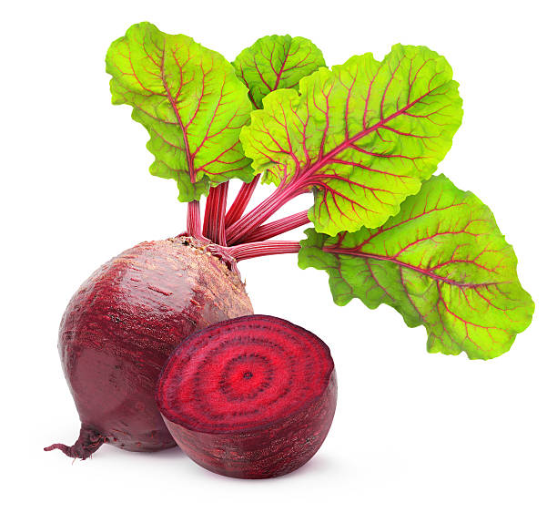
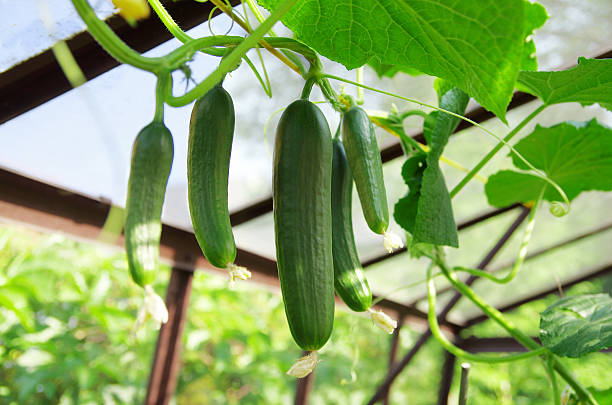
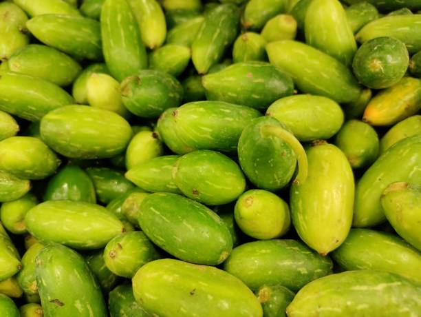
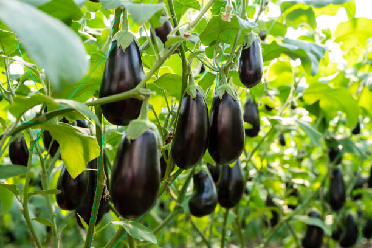

ENGLISH
Choose high-quality pumpkin seeds that are adapted to your growing conditions. Pumpkins prefer warm soil and full sun exposure.
2] Soil preparation:
Pumpkins require well-drained soil that is rich in organic matter. Amend the soil with compost or other organic matter and ensure that it is loose and crumbly.
3] Planting:
Pumpkin seeds can be planted directly into the garden after the last frost date when the soil has warmed up. Plant the seeds 1-2 inches deep and 3-5 feet apart in rows that are spaced 6-10 feet apart.
4] Germination:
Pumpkin seeds typically germinate within 7-10 days when the soil temperature is between 60-105°F (15.5-40.5°C). Keep the soil moist but not waterlogged during the germination period.
5] Seedling growth:
As the pumpkin seedlings grow, thin them to one plant every 3-5 feet. Pumpkins require regular watering and feeding with a balanced fertilizer to encourage healthy growth.
6] Vine growth:
Pumpkins are a vining plant that require support as they grow. Provide trellises or other support structures to keep the vines off the ground and allow them to grow vertically. Prune the vines to remove any damaged or diseased foliage.
7] Flowering and fruiting:
Pumpkin plants typically start flowering 40-50 days after planting. The female flowers will produce fruit, which can be harvested when they reach the desired size. Pumpkins are ready to be picked when they are firm, fully colored, and the stem is hard and dry.
8] Harvesting:
Pumpkins should be harvested before the first frost. Cut the pumpkin from the vine with a sharp knife, leaving a 3-4 inch stem. Store the pumpkins in a cool, dry place for up to several months.
ENGLISH
తెలుగు
మీ పెరుగుతున్న పరిస్థితులకు అనుగుణంగా ఉండే అధిక నాణ్యత గల గుమ్మడికాయ గింజలను ఎంచుకోండి. గుమ్మడికాయలు వెచ్చని నేల మరియు పూర్తి సూర్యరశ్మిని ఇష్టపడతాయి.
2] నేల తయారీ:
గుమ్మడికాయలకు సేంద్రియ పదార్థాలు అధికంగా ఉండే బాగా ఎండిపోయిన నేల అవసరం. కంపోస్ట్ లేదా ఇతర సేంద్రియ పదార్ధాలతో మట్టిని సవరించండి మరియు అది వదులుగా మరియు చిన్నగా ఉండేలా చూసుకోండి.
3] నాటడం:
మట్టి వేడెక్కినప్పుడు చివరి మంచు తేదీ తర్వాత గుమ్మడికాయ గింజలను నేరుగా తోటలోకి నాటవచ్చు. విత్తనాలను 1-2 అంగుళాల లోతు మరియు 3-5 అడుగుల దూరంలో 6-10 అడుగుల దూరంలో ఉన్న వరుసలలో నాటండి.
4] అంకురోత్పత్తి:
నేల ఉష్ణోగ్రత 60-105°F (15.5-40.5°C) మధ్య ఉన్నప్పుడు గుమ్మడికాయ గింజలు సాధారణంగా 7-10 రోజులలోపు మొలకెత్తుతాయి. అంకురోత్పత్తి సమయంలో మట్టిని తేమగా ఉంచాలి కాని నీరు నిలువకుండా ఉంచాలి.
5] మొలకల పెరుగుదల:
గుమ్మడికాయ మొలకలు పెరిగేకొద్దీ, వాటిని ప్రతి 3-5 అడుగులకు ఒక మొక్కకు సన్నగా చేయండి. ఆరోగ్యకరమైన పెరుగుదలను ప్రోత్సహించడానికి గుమ్మడికాయలకు క్రమం తప్పకుండా నీరు త్రాగుట మరియు సమతుల్య ఎరువులు అందించడం అవసరం.
6] వైన్ పెరుగుదల:
గుమ్మడికాయలు ఒక వైనింగ్ మొక్క, అవి పెరుగుతున్నప్పుడు మద్దతు అవసరం. తీగలను భూమి నుండి దూరంగా ఉంచడానికి మరియు వాటిని నిలువుగా పెరగడానికి ట్రేల్లిస్ లేదా ఇతర సహాయక నిర్మాణాలను అందించండి. దెబ్బతిన్న లేదా వ్యాధిగ్రస్తులైన ఆకులను తొలగించడానికి తీగలను కత్తిరించండి.
7] పుష్పించే మరియు ఫలాలు కాస్తాయి:
గుమ్మడికాయ మొక్కలు సాధారణంగా నాటిన 40-50 రోజుల తర్వాత పుష్పించడం ప్రారంభిస్తాయి. ఆడ పువ్వులు పండ్లను ఉత్పత్తి చేస్తాయి, అవి కావలసిన పరిమాణానికి చేరుకున్నప్పుడు వాటిని పండించవచ్చు. గుమ్మడికాయలు దృఢంగా, పూర్తిగా రంగులో ఉండి, కాండం గట్టిగా మరియు పొడిగా ఉన్నప్పుడు తీయడానికి సిద్ధంగా ఉంటాయి.
8] హార్వెస్టింగ్:
గుమ్మడికాయలను మొదటి మంచుకు ముందు కోయాలి. తీగ నుండి గుమ్మడికాయను పదునైన కత్తితో కత్తిరించండి, 3-4 అంగుళాల కాండం వదిలివేయండి. గుమ్మడికాయలను చాలా నెలల వరకు చల్లని, పొడి ప్రదేశంలో నిల్వ చేయండి.
తెలుగు
వినండి
2.SNAKE GOURD / 2.పొట్లకాయ


ENGLISH
Choose high-quality snake gourd seeds that are adapted to your growing conditions. Snake gourd prefers warm soil and full sun exposure.
2] Soil preparation:
Snake gourd requires well-drained soil that is rich in organic matter. Amend the soil with compost or other organic matter and ensure that it is loose and crumbly.
3] Planting:
Snake gourd seeds can be planted directly into the garden after the last frost date when the soil has warmed up. Plant the seeds 1-2 inches deep and 2-3 feet apart in rows that are spaced 6-8 feet apart.
4] Germination:
Snake gourd seeds typically germinate within 7-10 days when the soil temperature is between 70-90°F (21-32°C). Keep the soil moist but not waterlogged during the germination period.
5] Seedling growth:
As the snake gourd seedlings grow, thin them to one plant every 2-3 feet. Snake gourd requires regular watering and feeding with a balanced fertilizer to encourage healthy growth.
6] Vine growth:
Snake gourd is a vining plant that requires support as it grows. Provide trellises or other support structures to keep the vines off the ground and allow them to grow vertically. Prune the vines to remove any damaged or diseased foliage.
7] Flowering and fruiting:
Snake gourd plants typically start flowering 40-50 days after planting. The female flowers will produce fruit, which can be harvested when they reach the desired size. Snake gourds are ready to be picked when they are firm, dark green, and about 2-3 feet long.
8] Harvesting:
Snake gourds should be harvested regularly to encourage continued production. Cut the snake gourd from the vine with a sharp knife, leaving a 2-3 inch stem. Snake gourds can be stored in a cool, dry place for up to several weeks.
ENGLISH
తెలుగు
మీ పెరుగుతున్న పరిస్థితులకు అనుగుణంగా ఉండే అధిక-నాణ్యత పాము పొట్లకాయ విత్తనాలను ఎంచుకోండి. పాము పొట్లకాయ వెచ్చని నేల మరియు పూర్తిగా సూర్యరశ్మిని ఇష్టపడుతుంది.
2] నేల తయారీ:
పాము పొట్లకాయకు సేంద్రియ పదార్థాలు అధికంగా ఉండే బాగా ఎండిపోయిన నేల అవసరం. కంపోస్ట్ లేదా ఇతర సేంద్రియ పదార్ధాలతో మట్టిని సవరించండి మరియు అది వదులుగా మరియు చిన్నగా ఉండేలా చూసుకోండి.
3] నాటడం:
నేల వేడెక్కినప్పుడు చివరి మంచు తేదీ తర్వాత పాము పొట్లకాయ విత్తనాలను నేరుగా తోటలో నాటవచ్చు. విత్తనాలను 1-2 అంగుళాల లోతు మరియు 2-3 అడుగుల దూరంలో 6-8 అడుగుల దూరంలో ఉన్న వరుసలలో నాటండి.
4] అంకురోత్పత్తి:
నేల ఉష్ణోగ్రత 70-90°F (21-32°C) మధ్య ఉన్నప్పుడు పాము పొట్లకాయ గింజలు సాధారణంగా 7-10 రోజులలోపు మొలకెత్తుతాయి. అంకురోత్పత్తి సమయంలో మట్టిని తేమగా ఉంచాలి కాని నీరు నిలువకుండా ఉంచాలి.
5] మొలకల పెరుగుదల:
పాము పొట్లకాయ మొలకలు పెరిగేకొద్దీ వాటిని ప్రతి 2-3 అడుగులకు ఒక మొక్కకు పలుచండి. పాము పొట్లకాయ ఆరోగ్యకరమైన పెరుగుదలను ప్రోత్సహించడానికి క్రమం తప్పకుండా నీరు త్రాగుట మరియు సమతుల్య ఎరువులతో తినిపించడం అవసరం.
6] వైన్ ఎదుగుదల:
పాము పొట్లకాయ ఒక వైనింగ్ ప్లాంట్, ఇది పెరుగుతున్నప్పుడు మద్దతు అవసరం. తీగలను భూమి నుండి దూరంగా ఉంచడానికి మరియు వాటిని నిలువుగా పెరగడానికి ట్రేల్లిస్ లేదా ఇతర సహాయక నిర్మాణాలను అందించండి. దెబ్బతిన్న లేదా వ్యాధిగ్రస్తులైన ఆకులను తొలగించడానికి తీగలను కత్తిరించండి.
7] పుష్పించే మరియు ఫలాలు కాస్తాయి:
పాము పొట్లకాయ మొక్కలు సాధారణంగా నాటిన 40-50 రోజుల తర్వాత పుష్పించడం ప్రారంభిస్తాయి. ఆడ పువ్వులు పండ్లను ఉత్పత్తి చేస్తాయి, అవి కావలసిన పరిమాణానికి చేరుకున్నప్పుడు వాటిని పండించవచ్చు. పాము పొట్లకాయలు దృఢంగా, ముదురు ఆకుపచ్చ రంగులో మరియు 2-3 అడుగుల పొడవు ఉన్నప్పుడు తీయడానికి సిద్ధంగా ఉంటాయి.
8] హార్వెస్టింగ్:
నిరంతర ఉత్పత్తిని ప్రోత్సహించడానికి పాము పొట్లకాయలను క్రమం తప్పకుండా కోయాలి. తీగ నుండి పాము పొట్లకాయను పదునైన కత్తితో కత్తిరించండి, 2-3 అంగుళాల కాండం వదిలివేయండి. పాము పొట్లకాయలను చాలా వారాల వరకు చల్లని, పొడి ప్రదేశంలో నిల్వ చేయవచ్చు.
తెలుగు
వినండి
3. BEETROOT / 3.బీట్రూట్

ENGLISH
Beetroot seeds are typically planted in soil, where they absorb water and oxygen. The seed contains a tiny plant embryo and a supply of nutrients to support its growth until it can produce its own food through photosynthesis.
2] Germination:
When conditions are right, the seed will begin to germinate. The first visible sign of germination is the emergence of the radicle, which is the primary root that grows down into the soil to anchor the plant and absorb water and nutrients.
3] Seedling:
As the root grows, it also begins to produce shoots, which will eventually develop into leaves and stems. The seedling continues to rely on the nutrients stored in the seed until it is large enough to produce its own food through photosynthesis.
4] Vegetative growth:
As the seedling grows, it develops more leaves and stems, which photosynthesize and produce energy for the plant. Beetroot plants are biennials, meaning that they take two years to complete their life cycle. However, in the first year, the plant will produce edible roots instead of flowers.
5] Root development:
The edible part of the beetroot is the swollen root that grows beneath the soil. As the plant continues to grow, the root expands and becomes larger. Beetroot roots can be harvested at any time during the growing season, but they are typically allowed to grow until they reach a desirable size, which is usually around 2-3 inches in diameter.
6] Harvesting:
Beetroot roots can be harvested by gently loosening the soil around the root with a fork or trowel and then pulling the root up from the ground. The leaves can also be harvested and used in salads or cooked like spinach.
7] Second-year growth:
If the beetroot plant is left in the ground over winter, it will produce a flowering stem in the second year. The stem can grow up to six feet tall and produces a cluster of flowers. The seeds from these flowers can be saved for planting the following year.
ENGLISH
తెలుగు
బీట్రూట్ విత్తనాలు సాధారణంగా మట్టిలో నాటబడతాయి, ఇక్కడ అవి నీరు మరియు ఆక్సిజన్ను గ్రహిస్తాయి. విత్తనం కిరణజన్య సంయోగక్రియ ద్వారా దాని స్వంత ఆహారాన్ని ఉత్పత్తి చేసే వరకు దాని పెరుగుదలకు మద్దతుగా ఒక చిన్న మొక్క పిండం మరియు పోషకాల సరఫరాను కలిగి ఉంటుంది.
2] అంకురోత్పత్తి:
పరిస్థితులు అనుకూలించినప్పుడు, విత్తనం మొలకెత్తడం ప్రారంభమవుతుంది. అంకురోత్పత్తి యొక్క మొదటి కనిపించే సంకేతం రాడికల్ యొక్క ఆవిర్భావం, ఇది మొక్కను ఎంకరేజ్ చేయడానికి మరియు నీరు మరియు పోషకాలను గ్రహించడానికి నేలలోకి పెరిగే ప్రాథమిక మూలం.
3] విత్తనాలు:
రూట్ పెరిగేకొద్దీ, ఇది రెమ్మలను ఉత్పత్తి చేయడం ప్రారంభిస్తుంది, ఇది చివరికి ఆకులు మరియు కాండంగా అభివృద్ధి చెందుతుంది. కిరణజన్య సంయోగక్రియ ద్వారా దాని స్వంత ఆహారాన్ని ఉత్పత్తి చేసేంత వరకు విత్తనం విత్తనంలో నిల్వ చేయబడిన పోషకాలపై ఆధారపడి ఉంటుంది.
4] ఏపుగా పెరగడం:
మొలక పెరిగేకొద్దీ, ఎక్కువ ఆకులు మరియు కాండం అభివృద్ధి చెందుతుంది, ఇది కిరణజన్య సంయోగక్రియ మరియు మొక్కకు శక్తిని ఉత్పత్తి చేస్తుంది. బీట్రూట్ మొక్కలు ద్వైవార్షికాలు, అంటే వాటి జీవిత చక్రాన్ని పూర్తి చేయడానికి రెండు సంవత్సరాలు పడుతుంది. అయితే, మొదటి సంవత్సరంలో, మొక్క పువ్వులకు బదులుగా తినదగిన మూలాలను ఉత్పత్తి చేస్తుంది.
5] రూట్ అభివృద్ధి:
బీట్రూట్ యొక్క తినదగిన భాగం నేల కింద పెరిగే వాపు మూలం. మొక్క పెరుగుతూనే ఉన్నందున, మూలం విస్తరిస్తుంది మరియు పెద్దదిగా మారుతుంది. బీట్రూట్ మూలాలను పెరుగుతున్న కాలంలో ఎప్పుడైనా పండించవచ్చు, అయితే అవి సాధారణంగా 2-3 అంగుళాల వ్యాసం కలిగిన కావాల్సిన పరిమాణాన్ని చేరుకునే వరకు పెరగడానికి అనుమతించబడతాయి.
6] హార్వెస్టింగ్:
బీట్రూట్ వేర్లను ఫోర్క్ లేదా ట్రోవెల్తో రూట్ చుట్టూ ఉన్న మట్టిని సున్నితంగా వదులు చేసి, ఆపై వేరును నేల నుండి పైకి లాగడం ద్వారా పండించవచ్చు. ఆకులను కోయవచ్చు మరియు సలాడ్లలో ఉపయోగించవచ్చు లేదా బచ్చలికూర వలె వండవచ్చు.
7] రెండవ సంవత్సరం పెరుగుదల:
బీట్రూట్ మొక్కను శీతాకాలంలో భూమిలో ఉంచినట్లయితే, అది రెండవ సంవత్సరంలో పుష్పించే కాండంను ఉత్పత్తి చేస్తుంది. కాండం ఆరు అడుగుల ఎత్తు వరకు పెరుగుతుంది మరియు పుష్పాల గుత్తిని ఉత్పత్తి చేస్తుంది. ఈ పువ్వుల నుండి వచ్చే విత్తనాలను తరువాతి సంవత్సరం నాటడానికి సేవ్ చేయవచ్చు.
తెలుగు
వినండి
4. CUCUMBER / 4.దోసకాయ


ENGLISH
Choose high-quality cucumber seeds that are adapted to your growing conditions. Cucumber seeds can be planted directly into the garden or started indoors and transplanted.
2] Soil preparation:
Cucumbers prefer well-drained soil that is rich in organic matter. Amend the soil with compost or other organic matter and ensure that it is loose and crumbly.
3] Planting:
Cucumber seeds can be planted directly into the garden when the soil temperature is at least 60°F (15.5°C). Alternatively, you can start seeds indoors 3-4 weeks before the last frost date and transplant them outside when the soil has warmed up. Plant the seeds 1 inch deep and 12-18 inches apart in rows that are spaced 3-6 feet apart.
4] Germination:
Cucumber seeds typically germinate within 7-10 days when the soil temperature is between 60-95°F (15.5-35°C). Keep the soil moist but not waterlogged during the germination period.
5] Seedling growth:
As the cucumber seedlings grow, thin them to one plant every 12-18 inches. Cucumbers require regular watering and feeding with a balanced fertilizer to encourage healthy growth.
6] Vine growth:
Cucumbers are a vining plant that requires support as they grow. Provide trellises or other support structures to keep the vines off the ground and allow them to grow vertically. Prune the vines to remove any damaged or diseased foliage.
7] Flowering and fruiting:
Cucumber plants typically start flowering 40-50 days after planting. The female flowers will produce fruit, which can be harvested when they reach the desired size. Cucumbers are ready to be picked when they are firm, dark green, and about 6-8 inches long.
8] Harvesting:
Cucumbers should be harvested regularly to encourage continued production. They can be picked when they are young and tender or allowed to mature to a larger size for pickling. Be sure to check the vines regularly for ripe cucumbers to prevent over-ripening and to keep the vines producing.
ENGLISH
తెలుగు
మీ పెరుగుతున్న పరిస్థితులకు అనుగుణంగా ఉండే అధిక-నాణ్యత దోసకాయ విత్తనాలను ఎంచుకోండి. దోసకాయ గింజలను నేరుగా తోటలో నాటవచ్చు లేదా ఇంటి లోపల ప్రారంభించి మార్పిడి చేయవచ్చు.
2] నేల తయారీ:
దోసకాయలు సేంద్రీయ పదార్థంతో కూడిన బాగా ఎండిపోయిన నేలను ఇష్టపడతాయి. కంపోస్ట్ లేదా ఇతర సేంద్రియ పదార్ధాలతో మట్టిని సవరించండి మరియు అది వదులుగా మరియు చిన్నగా ఉండేలా చూసుకోండి.
3] నాటడం:
నేల ఉష్ణోగ్రత కనీసం 60°F (15.5°C) ఉన్నప్పుడు దోసకాయ గింజలను నేరుగా తోటలోకి నాటవచ్చు. ప్రత్యామ్నాయంగా, మీరు చివరి మంచు తేదీకి 3-4 వారాల ముందు ఇంటి లోపల విత్తనాలను ప్రారంభించవచ్చు మరియు నేల వేడెక్కినప్పుడు వాటిని బయట నాటవచ్చు. విత్తనాలను 1 అంగుళం లోతు మరియు 12-18 అంగుళాల దూరంలో 3-6 అడుగుల దూరంలో ఉన్న వరుసలలో నాటండి.
4] అంకురోత్పత్తి:
నేల ఉష్ణోగ్రత 60-95°F (15.5-35°C) మధ్య ఉన్నప్పుడు దోసకాయ గింజలు సాధారణంగా 7-10 రోజులలో మొలకెత్తుతాయి. అంకురోత్పత్తి సమయంలో మట్టిని తేమగా ఉంచాలి కాని నీరు నిలువకుండా ఉంచాలి.
5] మొలకల పెరుగుదల:
దోసకాయ మొలకలు పెరిగేకొద్దీ, వాటిని ప్రతి 12-18 అంగుళాలకు ఒక మొక్కకు సన్నగా చేయండి. ఆరోగ్యకరమైన పెరుగుదలను ప్రోత్సహించడానికి దోసకాయలకు క్రమం తప్పకుండా నీరు త్రాగుట మరియు సమతుల్య ఎరువులు అందించడం అవసరం.
6] వైన్ పెరుగుదల:
దోసకాయలు ఒక వైనింగ్ మొక్క, అవి పెరిగేకొద్దీ మద్దతు అవసరం. తీగలను భూమి నుండి దూరంగా ఉంచడానికి మరియు వాటిని నిలువుగా పెరగడానికి ట్రేల్లిస్ లేదా ఇతర సహాయక నిర్మాణాలను అందించండి. దెబ్బతిన్న లేదా వ్యాధిగ్రస్తులైన ఆకులను తొలగించడానికి తీగలను కత్తిరించండి.
7] పుష్పించే మరియు ఫలాలు కాస్తాయి:
దోసకాయ మొక్కలు సాధారణంగా నాటిన 40-50 రోజుల తర్వాత పుష్పించడం ప్రారంభిస్తాయి. ఆడ పువ్వులు పండ్లను ఉత్పత్తి చేస్తాయి, అవి కావలసిన పరిమాణానికి చేరుకున్నప్పుడు వాటిని పండించవచ్చు. దోసకాయలు దృఢంగా, ముదురు ఆకుపచ్చగా మరియు 6-8 అంగుళాల పొడవు ఉన్నప్పుడు తీయడానికి సిద్ధంగా ఉంటాయి.
8] హార్వెస్టింగ్:
నిరంతర ఉత్పత్తిని ప్రోత్సహించడానికి దోసకాయలను క్రమం తప్పకుండా కోయాలి. అవి యవ్వనంగా మరియు లేతగా ఉన్నప్పుడు తీయవచ్చు లేదా పిక్లింగ్ కోసం పెద్ద పరిమాణానికి పరిపక్వం చెందడానికి అనుమతించబడతాయి. పండిన దోసకాయలు ఎక్కువగా పండకుండా నిరోధించడానికి మరియు తీగలు ఉత్పత్తి అయ్యేలా చేయడానికి తీగలను క్రమం తప్పకుండా తనిఖీ చేయండి.
తెలుగు
వినండి
5. PEA / 5.బఠానీ
ENGLISH
Pea seeds are typically planted in soil, where they absorb water and oxygen. The seed contains a tiny plant embryo and a supply of nutrients to support its growth until it can produce its own food through photosynthesis.
2] Germination:
When conditions are right, the seed will begin to germinate. The first visible sign of germination is the emergence of the radicle, which is the primary root that grows down into the soil to anchor the plant and absorb water and nutrients.
3] Seedling:
As the root grows, it also begins to produce shoots, which will eventually develop into leaves and stems. The seedling continues to rely on the nutrients stored in the seed until it is large enough to produce its own food through photosynthesis.
4] Vegetative growth:
As the seedling grows, it develops more leaves and stems and begins to produce flowers. Peas are a vining plant, so they will send out tendrils to climb and support themselves.
5] Flowering:
Pea plants produce flowers that are typically white or pink in color. The flowers are self-pollinating, meaning that the pollen from the stamens (male reproductive organs) will fertilize the stigma (female reproductive organ) on the same plant.
6] Fruit development:
Once the flower is fertilized, it will develop into a pea pod. The pod contains the seeds that will eventually produce a new generation of pea plants.
7] Ripening and harvesting:
Pea pods will typically take 50-70 days to mature, depending on the variety. Once the pods are fully formed, they can be harvested by picking them off the plant. Pea plants can continue to produce pods for several weeks if they are kept well-watered and fertilized.
ENGLISH
తెలుగు
బఠానీ గింజలు సాధారణంగా మట్టిలో పండిస్తారు, ఇక్కడ అవి నీరు మరియు ఆక్సిజన్ను గ్రహిస్తాయి. విత్తనం కిరణజన్య సంయోగక్రియ ద్వారా దాని స్వంత ఆహారాన్ని ఉత్పత్తి చేసే వరకు దాని పెరుగుదలకు మద్దతుగా ఒక చిన్న మొక్క పిండం మరియు పోషకాల సరఫరాను కలిగి ఉంటుంది.
2] అంకురోత్పత్తి:
పరిస్థితులు అనుకూలించినప్పుడు, విత్తనం మొలకెత్తడం ప్రారంభమవుతుంది. అంకురోత్పత్తి యొక్క మొదటి కనిపించే సంకేతం రాడికల్ యొక్క ఆవిర్భావం, ఇది మొక్కను ఎంకరేజ్ చేయడానికి మరియు నీరు మరియు పోషకాలను గ్రహించడానికి నేలలోకి పెరిగే ప్రాథమిక మూలం.
3] విత్తనాలు:
రూట్ పెరిగేకొద్దీ, ఇది రెమ్మలను ఉత్పత్తి చేయడం ప్రారంభిస్తుంది, ఇది చివరికి ఆకులు మరియు కాండంగా అభివృద్ధి చెందుతుంది. కిరణజన్య సంయోగక్రియ ద్వారా దాని స్వంత ఆహారాన్ని ఉత్పత్తి చేసేంత వరకు విత్తనం విత్తనంలో నిల్వ చేయబడిన పోషకాలపై ఆధారపడి ఉంటుంది.
4] ఏపుగా పెరగడం:
మొలక పెరిగేకొద్దీ, ఎక్కువ ఆకులు మరియు కాండం అభివృద్ధి చెందుతుంది మరియు పుష్పాలను ఉత్పత్తి చేయడం ప్రారంభిస్తుంది. బఠానీలు ఒక వైనింగ్ ప్లాంట్, కాబట్టి అవి ఎక్కడానికి మరియు తమను తాము పోషించుకోవడానికి టెండ్రిల్స్ను పంపుతాయి.
5] పుష్పించే:
బఠానీ మొక్కలు సాధారణంగా తెలుపు లేదా గులాబీ రంగులో ఉండే పువ్వులను ఉత్పత్తి చేస్తాయి. పువ్వులు స్వీయ-పరాగసంపర్కం, అంటే కేసరాల నుండి వచ్చే పుప్పొడి (పురుష పునరుత్పత్తి అవయవాలు) అదే మొక్కపై కళంకం (ఆడ పునరుత్పత్తి అవయవం) ఫలదీకరణం చేస్తుంది.
6] పండ్ల అభివృద్ధి:
పువ్వును ఫలదీకరణం చేసిన తర్వాత, అది బఠానీ పాడ్గా అభివృద్ధి చెందుతుంది. పాడ్లో విత్తనాలు ఉంటాయి, అవి చివరికి కొత్త తరం బఠానీ మొక్కలను ఉత్పత్తి చేస్తాయి.
7] పండించడం మరియు కోయడం:
బీబఠానీలు సాధారణంగా రకాన్ని బట్టి పరిపక్వం చెందడానికి 50-70 రోజులు పడుతుంది. కాయలు పూర్తిగా ఏర్పడిన తర్వాత, వాటిని మొక్క నుండి తీయడం ద్వారా వాటిని కోయవచ్చు. బఠానీ మొక్కలు బాగా నీరు పోసి ఫలదీకరణం చేస్తే చాలా వారాల పాటు కాయలను ఉత్పత్తి చేయడం కొనసాగించవచ్చు.
తెలుగు
వినండి
6. RADISH / 6.ముల్లంగి
ENGLISH
Radish seeds are typically planted in soil, where they absorb water and oxygen. The seed contains a tiny plant embryo and a supply of nutrients to support its growth until it can produce its own food through photosynthesis.
2] Germination:
When conditions are right, the seed will begin to germinate. The first visible sign of germination is the emergence of the radicle, which is the primary root that grows down into the soil to anchor the plant and absorb water and nutrients.
3] Seedling:
As the root grows, it also begins to produce shoots, which will eventually develop into leaves and stems. The seedling continues to rely on the nutrients stored in the seed until it is large enough to produce its own food through photosynthesis.
4] Vegetative growth:
As the seedling grows, it develops more leaves and stems and begins to produce flowers. Radishes are a cool-season crop and prefer cool temperatures, so they will bolt and produce flowers quickly in warm weather.
5] Root development:
The edible part of the radish is the swollen root that grows beneath the soil. As the plant continues to grow, the root expands and becomes larger.
6] Harvesting:
Radishes can be harvested as soon as the roots reach a desirable size, which is typically 3-4 weeks after planting. The roots can be pulled from the soil or dug up with a fork. Radishes should be harvested before they become too mature, as they can become tough and woody if left in the ground too long.
ENGLISH
తెలుగు
ముల్లంగి విత్తనాలు సాధారణంగా మట్టిలో పండిస్తారు, ఇక్కడ అవి నీరు మరియు ఆక్సిజన్ను గ్రహిస్తాయి. విత్తనం కిరణజన్య సంయోగక్రియ ద్వారా దాని స్వంత ఆహారాన్ని ఉత్పత్తి చేసే వరకు దాని పెరుగుదలకు మద్దతుగా ఒక చిన్న మొక్క పిండం మరియు పోషకాల సరఫరాను కలిగి ఉంటుంది.
2] అంకురోత్పత్తి:
పరిస్థితులు అనుకూలించినప్పుడు, విత్తనం మొలకెత్తడం ప్రారంభమవుతుంది. అంకురోత్పత్తి యొక్క మొదటి కనిపించే సంకేతం రాడికల్ యొక్క ఆవిర్భావం, ఇది మొక్కను ఎంకరేజ్ చేయడానికి మరియు నీరు మరియు పోషకాలను గ్రహించడానికి నేలలోకి పెరిగే ప్రాథమిక మూలం.
3] విత్తనాలు:
రూట్ పెరిగేకొద్దీ, ఇది రెమ్మలను ఉత్పత్తి చేయడం ప్రారంభిస్తుంది, ఇది చివరికి ఆకులు మరియు కాండంగా అభివృద్ధి చెందుతుంది. కిరణజన్య సంయోగక్రియ ద్వారా దాని స్వంత ఆహారాన్ని ఉత్పత్తి చేసేంత వరకు విత్తనం విత్తనంలో నిల్వ చేయబడిన పోషకాలపై ఆధారపడి ఉంటుంది.
4] ఏపుగా పెరగడం:
మొలక పెరిగేకొద్దీ, ఎక్కువ ఆకులు మరియు కాండం అభివృద్ధి చెందుతుంది మరియు పుష్పాలను ఉత్పత్తి చేయడం ప్రారంభిస్తుంది. ముల్లంగి చల్లని-సీజన్ పంట మరియు చల్లని ఉష్ణోగ్రతలను ఇష్టపడతాయి, కాబట్టి అవి వెచ్చని వాతావరణంలో త్వరగా పూలు పూస్తాయి.
5] రూట్ అభివృద్ధి:
రముల్లంగి యొక్క తినదగిన భాగం నేల కింద పెరిగే వాపు రూట్. మొక్క పెరుగుతూనే ఉన్నందున, మూలం విస్తరిస్తుంది మరియు పెద్దదిగా మారుతుంది.
6] హార్వెస్టింగ్:
గ్మూలాలు కావాల్సిన పరిమాణానికి చేరుకున్న వెంటనే ముల్లంగిని కోయవచ్చు, ఇది సాధారణంగా నాటిన 3-4 వారాల తర్వాత. మూలాలను నేల నుండి లాగవచ్చు లేదా ఫోర్క్తో తవ్వవచ్చు. ముల్లంగి చాలా పరిపక్వం చెందకముందే కోయాలి, ఎందుకంటే అవి భూమిలో ఎక్కువసేపు ఉంచినట్లయితే అవి గట్టిగా మరియు చెక్కగా మారుతాయి.
తెలుగు
వినండి
7.BEANS / 7.బీన్స్
ENGLISH
Beans need plenty of sunlight, so choose a spot in your garden that gets at least six hours of direct sunlight per day.
2] Prepare the soil:
Beans grow best in well-drained soil that is rich in organic matter. Add compost or well-rotted manure to the soil before planting.
3] Plant the seeds:
Beans can be directly sown into the garden soil after the last frost date. Plant the seeds 1-2 inches deep and 4-6 inches apart.
4] Water the plants:
Beans need consistent moisture to thrive. Water them deeply once a week, or more often in hot, dry weather.
5] Provide support:
Many types of beans are climbing plants that need support to grow. Provide support, such as a trellis or poles, for the plants to climb.
6] Fertilize:
Beans benefit from regular fertilization. Apply a balanced fertilizer every 4-6 weeks during the growing season.
7] Control pests and diseases:
Keep an eye out for pests, such as aphids or beetles, and diseases, such as powdery mildew or rust. Treat any problems promptly with organic pest control methods or fungicides.
8] Harvest the beans:
Beans are ready to harvest when they are firm and crisp, about 50-60 days after planting. Pick the beans frequently to encourage continued production.
ENGLISH
తెలుగు
బీన్స్కు సూర్యరశ్మి పుష్కలంగా అవసరం, కాబట్టి మీ గార్డెన్లో రోజుకు కనీసం ఆరు గంటలు నేరుగా సూర్యరశ్మిని పొందే స్థలాన్ని ఎంచుకోండి.
2] మట్టిని సిద్ధం చేయండి:
బీన్స్ బాగా ఎండిపోయిన నేలలో బాగా పెరుగుతాయి, ఇది సేంద్రీయ పదార్థంతో సమృద్ధిగా ఉంటుంది. నాటడానికి ముందు మట్టికి కంపోస్ట్ లేదా బాగా కుళ్ళిన ఎరువును జోడించండి.
3] విత్తనాలను నాటండి:
చివరి మంచు తేదీ తర్వాత బీన్స్ నేరుగా తోట మట్టిలో నాటవచ్చు. విత్తనాలను 1-2 అంగుళాల లోతు మరియు 4-6 అంగుళాల దూరంలో నాటండి.
4] మొక్కలకు నీరు పెట్టండి:
బీన్స్ వృద్ధి చెందడానికి స్థిరమైన తేమ అవసరం. వాటిని వారానికి ఒకసారి లోతుగా నీరు పెట్టండి, లేదా చాలా తరచుగా వేడి, పొడి వాతావరణంలో.
5] మద్దతును అందించండి:
అనేక రకాల బీన్స్ మొక్కలు పైకి ఎదగడానికి మద్దతు అవసరం. మొక్కలు ఎక్కడానికి ట్రేల్లిస్ లేదా పోల్స్ వంటి మద్దతును అందించండి.
6] ఫలదీకరణం:
బీన్స్ సాధారణ ఫలదీకరణం నుండి ప్రయోజనం పొందుతాయి. పెరుగుతున్న కాలంలో ప్రతి 4-6 వారాలకు సమతుల్య ఎరువులు వేయండి.
7] తెగుళ్లు మరియు వ్యాధులను నియంత్రించండి:
అఫిడ్స్ లేదా బీటిల్స్ వంటి తెగుళ్లు మరియు బూజు తెగులు లేదా తుప్పు వంటి వ్యాధుల కోసం ఒక కన్ను వేసి ఉంచండి. సేంద్రీయ తెగులు నియంత్రణ పద్ధతులు లేదా శిలీంద్రనాశకాలతో ఏవైనా సమస్యలను వెంటనే చికిత్స చేయండి.
8] బీన్స్ను కోయండి:
నాటిన 50-60 రోజుల తర్వాత బీన్స్ గట్టిగా మరియు స్ఫుటంగా ఉన్నప్పుడు కోతకు సిద్ధంగా ఉంటాయి. నిరంతర ఉత్పత్తిని ప్రోత్సహించడానికి బీన్స్ను తరచుగా ఎంచుకోండి.
తెలుగు
వినండి
8.SWEET POTATO / 8.చిలగడదుంప
ENGLISH
Sweet potatoes need plenty of sunlight, so choose a spot in your garden that gets at least six hours of direct sunlight per day.
2] Prepare the soil:
Sweet potatoes grow best in loose, well-drained soil that is rich in organic matter. Add compost or well-rotted manure to the soil before planting.
3] Plant the slips:
Sweet potatoes are grown from slips, which are young shoots that grow from mature sweet potatoes. You can purchase slips from a garden center or start your own slips by placing sweet potatoes in water until they sprout. Plant the slips in the garden bed, leaving about 12 inches between each slip.
4] Water the plants:
Sweet potato plants need consistent moisture to thrive. Water them deeply once a week, or more often in hot, dry weather.
5] Fertilize:
Sweet potato plants benefit from regular fertilization. Apply a balanced fertilizer every 4-6 weeks during the growing season.
6] Mulch the plants:
To keep the soil moist and cool, mulch the sweet potato plants with straw or leaves.
7] Harvest the sweet potatoes:
Sweet potatoes are ready to harvest when the leaves start to yellow and die back, about 3-4 months after planting. Use a digging fork to gently lift the sweet potatoes out of the soil.
ENGLISH
తెలుగు
చిలగడదుంపలకు సూర్యరశ్మి పుష్కలంగా అవసరం, కాబట్టి మీ గార్డెన్లో రోజుకు కనీసం ఆరు గంటల ప్రత్యక్ష సూర్యకాంతి వచ్చే స్థలాన్ని ఎంచుకోండి.
2] మట్టిని సిద్ధం చేయండి:
సేంద్రియ పదార్థాలు అధికంగా ఉండే వదులుగా, బాగా ఎండిపోయిన నేలలో చిలగడదుంపలు బాగా పెరుగుతాయి. నాటడానికి ముందు మట్టికి కంపోస్ట్ లేదా బాగా కుళ్ళిన ఎరువును జోడించండి.
3] స్లిప్లను నాటండి:
చిలగడదుంపలు స్లిప్స్ నుండి పెరుగుతాయి, ఇవి పరిపక్వ చిలగడదుంపల నుండి పెరిగే యువ రెమ్మలు. మీరు గార్డెన్ సెంటర్ నుండి స్లిప్లను కొనుగోలు చేయవచ్చు లేదా చిలగడదుంపలు మొలకెత్తే వరకు నీటిలో ఉంచడం ద్వారా మీ స్వంత స్లిప్లను ప్రారంభించవచ్చు. తోట మంచంలో స్లిప్లను నాటండి, ప్రతి స్లిప్ మధ్య 12 అంగుళాలు వదిలివేయండి.
4] మొక్కలకు నీరు పెట్టండి:
చిలగడదుంప మొక్కలు వృద్ధి చెందడానికి స్థిరమైన తేమ అవసరం. వాటిని వారానికి ఒకసారి లోతుగా నీరు పెట్టండి, లేదా చాలా తరచుగా వేడి, పొడి వాతావరణంలో.
5] ఫలదీకరణం:
చిలగడదుంప మొక్కలు సాధారణ ఫలదీకరణం నుండి ప్రయోజనం పొందుతాయి. పెరుగుతున్న కాలంలో ప్రతి 4-6 వారాలకు సమతుల్య ఎరువులు వేయండి.
6] మొక్కలను కప్పండి:
మట్టిని తేమగా మరియు చల్లగా ఉంచడానికి, చిలగడదుంప మొక్కలను గడ్డి లేదా ఆకులతో కప్పండి.
7] చిలగడదుంపలను కోయండి:
నాటిన దాదాపు 3-4 నెలల తర్వాత ఆకులు పసుపు రంగులోకి మారి చనిపోయేటప్పుడు చిలగడదుంపలు కోతకు సిద్ధంగా ఉంటాయి. మట్టి నుండి తీపి బంగాళాదుంపలను శాంతముగా ఎత్తడానికి డిగ్గింగ్ ఫోర్క్ ఉపయోగించండి.
తెలుగు
వినండి
9.DRUMSTICK / 9.మునగ మొక్కలు

ENGLISH
Drumstick plants need plenty of sunlight, so choose a spot in your garden that gets at least six hours of direct sunlight per day.
2] Prepare the soil:
Drumstick plants grow best in well-drained soil that is rich in organic matter. Add compost or well-rotted manure to the soil before planting.
3] Plant the seeds or seedlings:
Drumstick seeds can be directly sown into the garden soil, or you can start with seedlings. Plant the seeds or seedlings 1 inch deep and 6-8 inches apart.
4] Water the plants:
Drumstick plants need consistent moisture to thrive. Water them deeply once a week, or more often in hot, dry weather.
5] Provide support:
Drumstick plants are trees that can grow up to 30 feet tall. Provide support, such as a stake or trellis, for the plants to grow straight.
6] Fertilize:
Drumstick plants benefit from regular fertilization. Apply a balanced fertilizer every 4-6 weeks during the growing season.
7] Prune the plants:
To encourage branching and bushy growth, prune the drumstick plants when they are young, removing the top of the plant when it reaches 3-4 feet tall.
8] Harvest the pods:
Drumstick pods are ready to harvest when they are about 6-8 inches long and green. Use a sharp knife or scissors to cut the pods from the tree.
ENGLISH
తెలుగు
మునగ మొక్కలకు సూర్యరశ్మి పుష్కలంగా అవసరం, కాబట్టి మీ తోటలో రోజుకు కనీసం ఆరు గంటల పాటు నేరుగా సూర్యరశ్మిని పొందే స్థలాన్ని ఎంచుకోండి.
2]మట్టిని సిద్ధం చేయండి:
సేంద్రియ పదార్థాలు అధికంగా ఉండే బాగా ఎండిపోయిన నేలలో మునగ మొక్కలు బాగా పెరుగుతాయి. నాటడానికి ముందు మట్టికి కంపోస్ట్ లేదా బాగా కుళ్ళిన ఎరువును జోడించండి.
3]విత్తనాలు లేదా మొలకలను నాటండి:
మునగ గింజలను నేరుగా తోట మట్టిలో నాటవచ్చు లేదా మీరు మొలకలతో ప్రారంభించవచ్చు. విత్తనాలు లేదా మొలకలను 1 అంగుళం లోతు మరియు 6-8 అంగుళాల దూరంలో నాటండి.
4]మొక్కలకు నీరు పెట్టండి:
మునగ మొక్కలు వృద్ధి చెందడానికి స్థిరమైన తేమ అవసరం. వాటిని వారానికి ఒకసారి లోతుగా నీరు పెట్టండి, లేదా చాలా తరచుగా వేడి, పొడి వాతావరణంలో.
5]మద్దతు ఇవ్వండి:
మునగ మొక్కలు 30 అడుగుల ఎత్తు వరకు పెరిగే చెట్లు. మొక్కలు నిటారుగా పెరగడానికి వాటా లేదా ట్రేల్లిస్ వంటి మద్దతును అందించండి.
6]ఎరువులు వేయండి:
మునగ మొక్కలు క్రమం తప్పకుండా ఎరువులు వేయడం వల్ల ప్రయోజనం పొందుతాయి. పెరుగుతున్న కాలంలో ప్రతి 4-6 వారాలకు సమతుల్య ఎరువులు వేయండి.
7]మొక్కలను కత్తిరించండి:
కొమ్మలు మరియు గుబురుగా ఉండే పెరుగుదలను ప్రోత్సహించడానికి, మునగ మొక్కలు చిన్నగా ఉన్నప్పుడు వాటిని కత్తిరించండి, మొక్క 3-4 అడుగుల ఎత్తుకు చేరుకున్నప్పుడు పైభాగాన్ని తొలగించండి.
8]కాయలను కోయండి:
మునగ కాయలు 6-8 అంగుళాల పొడవు మరియు ఆకుపచ్చగా ఉన్నప్పుడు కోతకు సిద్ధంగా ఉంటాయి. చెట్టు నుండి కాయలను కత్తిరించడానికి పదునైన కత్తి లేదా కత్తెర ఉపయోగించండి.
తెలుగు
వినండి
10.BITTER GOURD / 10.కాకరకాయ


ENGLISH
Bitter gourd plants need plenty of sunlight, so choose a spot in your garden that gets at least six hours of direct sunlight per day.
2] Prepare the soil:
Bitter gourd plants grow best in well-drained soil that is rich in organic matter. Add compost or well-rotted manure to the soil before planting.
3] Plant the seeds:
Bitter gourd seeds can be directly sown into the garden soil, or started indoors 4-6 weeks before the last frost date. Plant the seeds 1 inch deep and 12 inches apart.
4] Water the plants:
Bitter gourd plants need consistent moisture to thrive. Water them deeply once a week, or more often in hot, dry weather.
5] Provide support:
Bitter gourd plants are vines that can grow up to 20 feet long. Provide support, such as a trellis or bamboo poles, for the plants to climb.
6] Fertilize:
Bitter gourd plants benefit from regular fertilization. Apply a balanced fertilizer every 4-6 weeks during the growing season.
7] Harvest the fruit:
Bitter gourd fruits are ready to harvest when they are firm and green, about 10-12 weeks after planting. Use a sharp knife or scissors to cut the fruit from the vine.
ENGLISH
తెలుగు
కాకరకాయ మొక్కలకు సూర్యరశ్మి పుష్కలంగా అవసరం, కాబట్టి మీ గార్డెన్లో రోజుకు కనీసం ఆరు గంటలు నేరుగా సూర్యరశ్మిని పొందే స్థలాన్ని ఎంచుకోండి.
2] మట్టిని సిద్ధం చేయండి:
సేంద్రియ పదార్థాలు అధికంగా ఉండే మంచి ఎండిపోయిన నేలలో చేదు మొక్కలు బాగా పెరుగుతాయి. నాటడానికి ముందు మట్టికి కంపోస్ట్ లేదా బాగా కుళ్ళిన ఎరువును జోడించండి.
3] విత్తనాలను నాటండి:
పొట్లకాయ గింజలను నేరుగా తోట మట్టిలో నాటవచ్చు లేదా చివరి మంచు తేదీకి 4-6 వారాల ముందు ఇంటి లోపల ప్రారంభించవచ్చు. విత్తనాలను 1 అంగుళం లోతు మరియు 12 అంగుళాల దూరంలో నాటండి.
4] మొక్కలకు నీరు పెట్టండి:
చేదు పొట్లకాయలు వృద్ధి చెందడానికి స్థిరమైన తేమ అవసరం. వాటిని వారానికి ఒకసారి లోతుగా నీరు పెట్టండి, లేదా చాలా తరచుగా వేడి, పొడి వాతావరణంలో.
5] మద్దతు ఇవ్వండి:
చేదు పొట్లకాయ మొక్కలు 20 అడుగుల పొడవు వరకు పెరిగే తీగలు. మొక్కలు ఎక్కడానికి ట్రేల్లిస్ లేదా వెదురు స్తంభాలు వంటి మద్దతును అందించండి.
6] ఎరువులు వేయండి:
క్రమం తప్పకుండా ఎరువులు వేయడం వల్ల చేదు మొక్కలు ప్రయోజనం పొందుతాయి. పెరుగుతున్న కాలంలో ప్రతి 4-6 వారాలకు సమతుల్య ఎరువులు వేయండి.
7] పండ్లను కోయండి:
కాకరకాయలు నాటిన 10-12 వారాల తర్వాత గట్టిగా మరియు ఆకుపచ్చగా ఉన్నప్పుడు కోతకు సిద్ధంగా ఉంటాయి. తీగ నుండి పండ్లను కత్తిరించడానికి పదునైన కత్తి లేదా కత్తెర ఉపయోగించండి.
తెలుగు
వినండి
11.BELL PEPPER / 11.బెల్ మిరియాలు


ENGLISH
Bell peppers, also known as sweet peppers, are a variety of Capsicum annuum species, just like red peppers. The growth mechanism of bell peppers is quite similar to that of red peppers.
2] Germination:
Bell peppers grow from seeds, which need to be germinated in warm, moist soil. The seeds typically take 7-10 days to germinate, after which a young plant emerges. The plant will continue to grow, producing leaves and stems, for several weeks.
3] Vegetative Growth:
Like red peppers, bell peppers require ample sunlight, water, and nutrients to thrive. They prefer well-draining soil that is rich in organic matter, and they need at least 6 hours of direct sunlight per day.
4] Flowering:
Once the bell pepper plant has matured, it will begin to produce flowers. The flowers are small and white, and they usually appear in clusters near the top of the plant. Pollination typically occurs via bees and other insects, although some varieties of peppers are self-pollinating.
5] Harvesting:
Once the flowers have been pollinated, they will begin to develop into fruits. Bell peppers start off green and then turn yellow, orange, or red as they mature, depending on the variety. It takes around 60-90 days for a bell pepper plant to produce fully mature fruits that are ready to harvest.
ENGLISH
తెలుగు
బెల్ పెప్పర్లను తీపి మిరియాలు అని కూడా పిలుస్తారు, ఇవి ఎర్ర మిరియాల మాదిరిగానే క్యాప్సికమ్ యాన్యుమ్ రకాలు. బెల్ పెప్పర్స్ యొక్క పెరుగుదల విధానం ఎర్ర మిరియాలు మాదిరిగానే ఉంటుంది.
2] అంకురోత్పత్తి:
బెల్ పెప్పర్స్ విత్తనాల నుండి పెరుగుతాయి, వీటిని వెచ్చని, తేమతో కూడిన నేలలో మొలకెత్తాలి. విత్తనాలు సాధారణంగా మొలకెత్తడానికి 7-10 రోజులు పడుతుంది, ఆ తర్వాత ఒక యువ మొక్క ఉద్భవిస్తుంది. మొక్క అనేక వారాల పాటు ఆకులు మరియు కాడలను ఉత్పత్తి చేస్తూ పెరుగుతూనే ఉంటుంది.
3] వృక్షసంపద పెరుగుదల:
ఎర్ర మిరియాలు వలె, బెల్ పెప్పర్లకు పుష్కలంగా సూర్యరశ్మి, నీరు మరియు పోషకాలు వృద్ధి చెందుతాయి. వారు సేంద్రీయ పదార్థంతో సమృద్ధిగా ఉన్న బాగా ఎండిపోయే మట్టిని ఇష్టపడతారు మరియు వారికి రోజుకు కనీసం 6 గంటల ప్రత్యక్ష సూర్యకాంతి అవసరం.
4] పుష్పించేది:
బెల్ పెప్పర్ మొక్క పరిపక్వం చెందిన తర్వాత, అది పువ్వులను ఉత్పత్తి చేయడం ప్రారంభిస్తుంది. పువ్వులు చిన్నవి మరియు తెలుపు రంగులో ఉంటాయి మరియు అవి సాధారణంగా మొక్క పైభాగంలో గుత్తులుగా కనిపిస్తాయి. పరాగసంపర్కం సాధారణంగా తేనెటీగలు మరియు ఇతర కీటకాల ద్వారా జరుగుతుంది, అయితే కొన్ని రకాల మిరియాలు స్వీయ-పరాగసంపర్కం చేస్తాయి.
5] హార్వెస్టింగ్:
పువ్వులు పరాగసంపర్కం చేసిన తర్వాత, అవి పండ్లుగా అభివృద్ధి చెందడం ప్రారంభిస్తాయి. బెల్ పెప్పర్లు ఆకుపచ్చ రంగులో ప్రారంభమవుతాయి మరియు రకాన్ని బట్టి అవి పరిపక్వం చెందుతున్నప్పుడు పసుపు, నారింజ లేదా ఎరుపు రంగులోకి మారుతాయి. బెల్ పెప్పర్ మొక్క పూర్తిగా పండిన పండ్లను ఉత్పత్తి చేయడానికి 60-90 రోజులు పడుతుంది, అవి కోతకు సిద్ధంగా ఉన్నాయి.
తెలుగు
వినండి
12.RED CHILLI / 12.ఎర్ర మిరపకాయ


ENGLISH
Red chilies are typically grown from seeds, which can be purchased from a seed supplier or harvested from mature chili plants. The seeds are planted about 1/4 inch deep in a pot or directly in the ground, with a spacing of about 12 inches between plants.
2] Germination:
After planting, the chili seeds will begin to germinate within 1-2 weeks. The seedlings will emerge from the soil and grow into green stems with leaves.
3] Vegetative growth:
As the chili plant grows, it will develop more leaves and stems. The plant will use these leaves to photosynthesize and produce energy for the flowers and fruits.
4] Flowering:
After about 6-8 weeks of growth, the chili plant will begin to produce flowers. These flowers will develop into the red chilies after pollination.
5] Fruit formation:
As the flowers are pollinated, the red chilies will begin to grow and develop. They will gradually increase in size and turn from green to red as they mature. The time it takes for chilies to mature varies depending on the variety and growing conditions.
6] Harvesting:
Red chilies are typically harvested when they are fully mature and bright red in color. They can be plucked off the plant by hand, or cut off with a pair of scissors or pruning shears. The plants will continue to produce chilies as long as the growing conditions are favorable.
ENGLISH
తెలుగు
ఎర్ర మిరపకాయలను సాధారణంగా విత్తనాల నుండి పండిస్తారు, వీటిని విత్తన సరఫరాదారు నుండి కొనుగోలు చేయవచ్చు లేదా పరిపక్వమైన మిరప మొక్కల నుండి పండించవచ్చు. విత్తనాలను ఒక కుండలో 1/4 అంగుళాల లోతులో లేదా నేరుగా భూమిలో నాటారు, మొక్కల మధ్య 12 అంగుళాల అంతరం ఉంటుంది.
2] అంకురోత్పత్తి:
నాటిన తరువాత, మిరప గింజలు 1-2 వారాలలో మొలకెత్తడం ప్రారంభమవుతుంది. మొలకలు నేల నుండి ఉద్భవించి, ఆకులతో పచ్చని కాండంగా పెరుగుతాయి.
3] ఏపుగా ఎదుగుదల:
మిరప మొక్క పెరిగేకొద్దీ, ఎక్కువ ఆకులు మరియు కాండం అభివృద్ధి చెందుతాయి. మొక్క ఈ ఆకులను కిరణజన్య సంయోగక్రియకు ఉపయోగిస్తుంది మరియు పువ్వులు మరియు పండ్ల కోసం శక్తిని ఉత్పత్తి చేస్తుంది.
4] పుష్పించేది:
దాదాపు 6-8 వారాల పెరుగుదల తర్వాత, మిరప మొక్క పూలు ఇవ్వడం ప్రారంభిస్తుంది. ఈ పువ్వులు పరాగసంపర్కం తర్వాత ఎర్ర మిరపకాయలుగా అభివృద్ధి చెందుతాయి.
5] ఫలాలు ఏర్పడటం:
పువ్వులు పరాగసంపర్కం అయినందున, ఎర్ర మిరపకాయలు పెరగడం మరియు అభివృద్ధి చెందడం ప్రారంభమవుతుంది. అవి క్రమంగా పరిమాణంలో పెరుగుతాయి మరియు పరిపక్వం చెందుతున్నప్పుడు ఆకుపచ్చ నుండి ఎరుపు రంగులోకి మారుతాయి. మిరపకాయలు పక్వానికి పట్టే సమయం వివిధ మరియు పెరుగుతున్న పరిస్థితులపై ఆధారపడి ఉంటుంది.
6] హార్వెస్టింగ్:
ఎర్ర మిరపకాయలు పూర్తిగా పరిపక్వం చెంది ప్రకాశవంతమైన ఎరుపు రంగులో ఉన్నప్పుడు సాధారణంగా పండిస్తారు. వాటిని చేతితో మొక్కను తీయవచ్చు లేదా ఒక జత కత్తెర లేదా కత్తిరింపు కత్తెరతో కత్తిరించవచ్చు. ఎదుగుదల పరిస్థితులు అనుకూలంగా ఉన్నంత వరకు మొక్కలు మిరపను ఉత్పత్తి చేస్తూనే ఉంటాయి.
తెలుగు
వినండి
13.GREEN CHILLI / 13.పచ్చి మిర్చి


ENGLISH
Green chilies are typically grown from seeds, which can be purchased from a seed supplier or harvested from mature chili plants. The seeds are planted about 1/4 inch deep in a pot or directly in the ground, with a spacing of about 12 inches between plants.
2] Germination:
After planting, the chili seeds will begin to germinate within 1-2 weeks. The seedlings will emerge from the soil and grow into green stems with leaves.
3] Vegetative growth:
As the chili plant grows, it will develop more leaves and stems. The plant will use these leaves to photosynthesize and produce energy for the flowers and fruits.
4] Flowering:
After about 6-8 weeks of growth, the chili plant will begin to produce flowers. These flowers will develop into the green chilies after pollination.
5] Fruit formation:
As the flowers are pollinated, the green chilies will begin to grow and develop. They will gradually increase in size and turn from green to red, yellow, or other colors depending on the variety.
6] Harvesting:
Green chilies are typically harvested when they are about 2-3 inches long and bright green in color. They can be plucked off the plant by hand, or cut off with a pair of scissors or pruning shears. The plants will continue to produce chilies as long as the growing conditions are favorable.
ENGLISH
తెలుగు
పచ్చి మిరపకాయలను సాధారణంగా విత్తనాల నుండి పండిస్తారు, వీటిని విత్తన సరఫరాదారు నుండి కొనుగోలు చేయవచ్చు లేదా పరిపక్వమైన మిరప మొక్కల నుండి పండించవచ్చు. విత్తనాలను ఒక కుండలో 1/4 అంగుళాల లోతులో లేదా నేరుగా భూమిలో నాటారు, మొక్కల మధ్య 12 అంగుళాల అంతరం ఉంటుంది.
2] మొలకెత్తడం:
నాటిన తర్వాత, మిరప గింజలు 1-2 వారాలలో మొలకెత్తడం ప్రారంభమవుతుంది. మొలకలు నేల నుండి ఉద్భవించి, ఆకులతో పచ్చని కాండంగా పెరుగుతాయి.
3] ఏపుగా పెరగడం:
మిరప మొక్క పెరిగేకొద్దీ, ఎక్కువ ఆకులు మరియు కాండం అభివృద్ధి చెందుతుంది. మొక్క ఈ ఆకులను కిరణజన్య సంయోగక్రియకు ఉపయోగిస్తుంది మరియు పువ్వులు మరియు పండ్ల కోసం శక్తిని ఉత్పత్తి చేస్తుంది.
4] పుష్పించేవి:
దాదాపు 6-8 వారాల పెరుగుదల తర్వాత, మిరప మొక్క పూలను ఉత్పత్తి చేయడం ప్రారంభిస్తుంది. ఈ పువ్వులు పరాగసంపర్కం తర్వాత పచ్చి మిరపకాయలుగా అభివృద్ధి చెందుతాయి.
5] పండ్ల నిర్మాణం:
పువ్వులు పరాగసంపర్కం అయినందున, పచ్చి మిరపకాయలు పెరగడం మరియు అభివృద్ధి చెందడం ప్రారంభమవుతుంది. అవి క్రమంగా పరిమాణంలో పెరుగుతాయి మరియు రకాన్ని బట్టి ఆకుపచ్చ నుండి ఎరుపు, పసుపు లేదా ఇతర రంగులకు మారుతాయి.
6] కోత:
పచ్చి మిరపకాయలు సాధారణంగా 2-3 అంగుళాల పొడవు మరియు ప్రకాశవంతమైన ఆకుపచ్చ రంగులో ఉన్నప్పుడు పండించబడతాయి. వాటిని చేతితో మొక్కను తీయవచ్చు లేదా ఒక జత కత్తెర లేదా కత్తిరింపు కత్తెరతో కత్తిరించవచ్చు. ఎదుగుదల పరిస్థితులు అనుకూలంగా ఉన్నంత వరకు మొక్కలు మిరపను ఉత్పత్తి చేస్తూనే ఉంటాయి.
తెలుగు
వినండి
14.GINGER / 14.అల్లం
ENGLISH
Ginger is typically grown from a ginger root that is purchased from a grocery store or seed supplier. The ginger root is planted about 2-3 inches deep in a pot or directly in the ground, with the buds facing upward.
2] Sprouting:
After planting, the ginger root will begin to sprout within 2-3 weeks. The sprouts will emerge from the soil and grow into green stems with leaves.
3] Vegetative growth:
As the ginger plant grows, it will develop more leaves and stems. The plant will use these leaves to photosynthesize and produce energy for the rhizomes.
4] Rhizome formation:
As the ginger plant continues to grow, it will begin to produce new rhizomes (ginger roots) from its existing rhizomes. These rhizomes will develop underground and will be ready to harvest after 8-10 months.
5] Maturation:
Ginger is typically ready to harvest when the leaves and stems begin to yellow and die back. This usually occurs after 8-10 months of growth.
6] Harvesting:
To harvest the ginger, the soil around the plant is loosened with a fork or shovel, and the rhizomes are gently dug up. They can then be washed and stored for later use.
ENGLISH
తెలుగు
అల్లం సాధారణంగా కిరాణా దుకాణం లేదా విత్తన సరఫరాదారు నుండి కొనుగోలు చేయబడిన అల్లం రూట్ నుండి పెరుగుతుంది. అల్లం వేరును ఒక కుండలో లేదా నేరుగా భూమిలో 2-3 అంగుళాల లోతులో నాటారు, మొగ్గలు పైకి ఎదురుగా ఉంటాయి.
2] మొలకెత్తడం:
నాటిన తర్వాత, అల్లం వేరు 2-3 వారాలలో మొలకెత్తడం ప్రారంభమవుతుంది. మొలకలు నేల నుండి ఉద్భవించి, ఆకులతో ఆకుపచ్చ కాండంగా పెరుగుతాయి.
3] ఏపుగా పెరగడం:
అల్లం మొక్క పెరిగేకొద్దీ, ఎక్కువ ఆకులు మరియు కాండం అభివృద్ధి చెందుతాయి. మొక్క ఈ ఆకులను కిరణజన్య సంయోగక్రియకు ఉపయోగిస్తుంది మరియు రైజోమ్లకు శక్తిని ఉత్పత్తి చేస్తుంది.
4] రైజోమ్ ఏర్పడటం:
అల్లం మొక్క పెరుగుతూనే ఉన్నందున, ఇది ఇప్పటికే ఉన్న రైజోమ్ల నుండి కొత్త రైజోమ్లను (అల్లం మూలాలు) ఉత్పత్తి చేయడం ప్రారంభిస్తుంది. ఈ రైజోమ్లు భూగర్భంలో అభివృద్ధి చెందుతాయి మరియు 8-10 నెలల తర్వాత కోతకు సిద్ధంగా ఉంటాయి.
5] పరిపక్వత:
ఆకులు మరియు కాండం పసుపు రంగులోకి మారడం మరియు తిరిగి చనిపోవడం ప్రారంభించినప్పుడు అల్లం సాధారణంగా కోతకు సిద్ధంగా ఉంటుంది. ఇది సాధారణంగా 8-10 నెలల పెరుగుదల తర్వాత సంభవిస్తుంది.
6] కోత:
అల్లం కోయడానికి, మొక్క చుట్టూ ఉన్న మట్టిని ఫోర్క్ లేదా పారతో వదులుతారు మరియు రైజోమ్లను సున్నితంగా త్రవ్వాలి. తర్వాత వాటిని కడిగి, తర్వాత ఉపయోగం కోసం నిల్వ చేయవచ్చు.
తెలుగు
వినండి
15. GARLIC / 15. వెల్లుల్లి
ENGLISH
Garlic is typically planted in the fall, about 4-6 weeks before the first hard frost, although it can also be planted in the spring. Garlic cloves are separated from the bulb and planted about 2 inches deep and spaced about 6 inches apart in rows.
2] Vegetative growth:
After planting, the garlic will begin to grow leaves and stems. These leaves and stems will continue to grow throughout the growing season.
3] Bulb formation:
As the garlic plant grows, it will begin to form a bulb at its base. This bulb will enlarge over time, depending on the variety and growing conditions.
4] Maturation:
Garlic is typically ready to harvest in mid-summer, about 90-150 days after planting, depending on the variety. At this point, the tops of the plants will begin to yellow and fall over, indicating that the garlic is fully mature.
5] Harvesting:
To harvest the garlic, the soil around the plants is loosened with a fork or shovel, and the garlic is gently pulled out of the ground by its stem. They can then be left in the sun to dry for a few days before storing.
6] Curing:
After the garlic has been harvested, it should be cured for several weeks to allow it to fully dry and develop its flavor. This can be done by spreading the garlic out in a dry, well-ventilated area.
ENGLISH
తెలుగు
వెల్లుల్లిని సాధారణంగా శరదృతువులో పండిస్తారు, మొదటి గట్టి మంచుకు 4-6 వారాల ముందు, అయితే దీనిని వసంతకాలంలో కూడా నాటవచ్చు. వెల్లుల్లి లవంగాలను బల్బ్ నుండి వేరు చేసి 2 అంగుళాల లోతులో నాటారు మరియు వరుసలలో 6 అంగుళాల దూరంలో ఉంచుతారు.
2] ఏపుగా పెరగడం:
నాటిన తర్వాత, వెల్లుల్లి ఆకులు మరియు కాండం పెరగడం ప్రారంభమవుతుంది. ఈ ఆకులు మరియు కాండం పెరుగుతున్న కాలంలో పెరుగుతూనే ఉంటాయి.
3] బల్బ్ ఏర్పడటం:
వెల్లుల్లి మొక్క పెరిగేకొద్దీ, దాని బేస్ వద్ద బల్బ్ ఏర్పడటం ప్రారంభమవుతుంది. ఈ బల్బ్ వివిధ మరియు పెరుగుతున్న పరిస్థితులపై ఆధారపడి కాలక్రమేణా పెరుగుతుంది.
4] పక్వత:
వెల్లుల్లి సాధారణంగా వేసవి మధ్యలో, నాటిన 90-150 రోజుల తర్వాత, రకాన్ని బట్టి కోయడానికి సిద్ధంగా ఉంటుంది. ఈ సమయంలో, మొక్కల పైభాగాలు పసుపు రంగులోకి వస్తాయి మరియు వెల్లుల్లి పూర్తిగా పరిపక్వం చెందిందని సూచిస్తుంది.
5] కోత:
వెల్లుల్లిని కోయడానికి, మొక్కల చుట్టూ ఉన్న మట్టిని ఫోర్క్ లేదా పారతో వదులుతారు మరియు వెల్లుల్లిని దాని కాండం ద్వారా నేల నుండి మెల్లగా బయటకు తీస్తారు. వాటిని నిల్వ చేయడానికి ముందు కొన్ని రోజులు ఎండలో ఉంచవచ్చు.
6] క్యూరింగ్:
వెల్లుల్లిని పండించిన తర్వాత, అది పూర్తిగా పొడిగా ఉండటానికి మరియు దాని రుచిని అభివృద్ధి చేయడానికి అనేక వారాలపాటు దానిని నయం చేయాలి. పొడి, బాగా వెంటిలేషన్ ప్రదేశంలో వెల్లుల్లిని విస్తరించడం ద్వారా ఇది చేయవచ్చు.
తెలుగు
వినండి
16.ONION / 16.ఉల్లిపాయ
ENGLISH
Onions are typically planted in the early spring, as soon as the soil can be worked. Onion sets (small bulbs) or seedlings can be used for planting. The sets or seedlings are planted about 1-2 inches deep and spaced about 4-6 inches apart in rows.
2] Vegetative growth:
After planting, the onion plant will begin to grow leaves and stems. These leaves and stems will continue to grow throughout the growing season.
3] Bulb formation:
As the onion plant grows, it will begin to form a bulb at its base. This bulb will enlarge over time, depending on the variety and growing conditions.
4] Maturation:
Onions are typically ready to harvest about 100-120 days after planting, depending on the variety. At this point, the tops of the plants will begin to yellow and fall over, indicating that the onions are fully mature.
5] Harvesting:
To harvest the onions, the soil around the plants is loosened with a fork or shovel, and the onions are gently pulled out of the ground by their tops. They can then be left in the sun to dry for a few days before storing.
6] Curing:
After the onions have been harvested, they should be cured for several weeks to allow them to fully dry and develop their flavor. This can be done by spreading the onions out in a dry, well-ventilated area.
ENGLISH
తెలుగు
ఉల్లిపాయలు సాధారణంగా వసంత ఋతువులో నాటబడతాయి, నేల పని చేయగలిగిన వెంటనే. ఉల్లిపాయ సెట్లు (చిన్న గడ్డలు) లేదా మొలకలను నాటడానికి ఉపయోగించవచ్చు. సెట్లు లేదా మొలకలు 1-2 అంగుళాల లోతులో నాటబడతాయి మరియు వరుసలలో 4-6 అంగుళాల దూరంలో ఉంటాయి.
2] ఏపుగా పెరగడం:
నాటిన తర్వాత, ఉల్లిపాయ మొక్క ఆకులు మరియు కాండం పెరగడం ప్రారంభమవుతుంది. ఈ ఆకులు మరియు కాండం పెరుగుతున్న కాలంలో పెరుగుతూనే ఉంటాయి.
3] బల్బ్ ఏర్పడటం:
ఉల్లిపాయ మొక్క పెరిగేకొద్దీ, దాని అడుగుభాగంలో బల్బ్ ఏర్పడటం ప్రారంభమవుతుంది. ఈ బల్బ్ వివిధ మరియు పెరుగుతున్న పరిస్థితులపై ఆధారపడి కాలక్రమేణా పెరుగుతుంది.
4] పక్వత:
ఉల్లిపాయలు సాధారణంగా రకాన్ని బట్టి నాటిన 100-120 రోజుల తర్వాత కోతకు సిద్ధంగా ఉంటాయి. ఈ సమయంలో, మొక్కల పైభాగాలు పసుపు రంగులోకి వస్తాయి మరియు ఉల్లిపాయలు పూర్తిగా పరిపక్వం చెందాయని సూచిస్తుంది.
5] హార్వెస్టింగ్:
ఉల్లిపాయలను కోయడానికి, మొక్కల చుట్టూ ఉన్న మట్టిని ఫోర్క్ లేదా పారతో వదులుతారు మరియు ఉల్లిపాయలను వాటి పైభాగాల ద్వారా నేల నుండి మెల్లగా బయటకు తీస్తారు. వాటిని నిల్వ చేయడానికి ముందు కొన్ని రోజులు ఎండలో ఉంచవచ్చు.
6] క్యూరింగ్:
ఉల్లిపాయలు కోసిన తర్వాత, వాటిని పూర్తిగా పొడిగా మరియు వాటి రుచిని పెంపొందించడానికి వాటిని చాలా వారాల పాటు నయం చేయాలి. ఉల్లిపాయలను పొడిగా, బాగా వెంటిలేషన్ చేసిన ప్రదేశంలో విస్తరించడం ద్వారా ఇది చేయవచ్చు.
తెలుగు
వినండి
17.POTATO / 17.బంగాళదుంప

ENGLISH
Potatoes are typically planted in the early spring, after the danger of frost has passed. The potatoes are either cut into pieces that contain one or two "eyes" (small buds), or planted whole. These pieces or whole potatoes are then planted about 4-6 inches deep in the soil.
2] Sprouting:
After the potatoes are planted, they will begin to sprout within 2-3 weeks. The sprouts will emerge from the soil and grow into green stems with leaves.
3] Vegetative growth:
As the potato plant grows, it will develop more leaves and stems. The plant will use these leaves to photosynthesize and produce energy for the tubers.
4] Tuberization:
As the potato plant continues to grow, it will begin to produce tubers (potatoes) from its roots. These tubers will develop from the stem nodes that are located underground. Each node can produce multiple tubers, depending on the variety.
5] Maturation:
Potatoes are typically ready to harvest about 90-120 days after planting, depending on the variety. At this point, the tops of the plants will begin to die back, indicating that the tubers are fully mature.
6] Harvesting:
To harvest the potatoes, the soil around the plants is loosened with a fork or shovel, and the potatoes are gently dug up. They can then be washed and stored for later use.
ENGLISH
తెలుగు
బంగాళాదుంపలను సాధారణంగా వసంత ఋతువులో, మంచు ప్రమాదం దాటిన తర్వాత పండిస్తారు. బంగాళదుంపలు ఒకటి లేదా రెండు "కళ్ళు" (చిన్న మొగ్గలు) కలిగి ఉన్న ముక్కలుగా కట్ చేయబడతాయి లేదా మొత్తంగా నాటబడతాయి. ఈ ముక్కలు లేదా మొత్తం బంగాళదుంపలు మట్టిలో 4-6 అంగుళాల లోతులో నాటబడతాయి.
2] మొలకెత్తడం:
బంగాళదుంపలు నాటిన తర్వాత, అవి 2-3 వారాలలో మొలకెత్తడం ప్రారంభిస్తాయి. మొలకలు నేల నుండి ఉద్భవించి, ఆకులతో ఆకుపచ్చ కాండంగా పెరుగుతాయి.
3] ఏపుగా పెరగడం:
బంగాళాదుంప మొక్క పెరిగేకొద్దీ, ఎక్కువ ఆకులు మరియు కాండం అభివృద్ధి చెందుతుంది. మొక్క ఈ ఆకులను కిరణజన్య సంయోగక్రియకు ఉపయోగిస్తుంది మరియు దుంపలకు శక్తిని ఉత్పత్తి చేస్తుంది.
4] ట్యూబరైజేషన్:
బంగాళాదుంప మొక్క పెరుగుతూనే ఉంటుంది, దాని మూలాల నుండి దుంపలను (బంగాళదుంపలు) ఉత్పత్తి చేయడం ప్రారంభిస్తుంది. ఈ దుంపలు భూగర్భంలో ఉన్న కాండం నోడ్స్ నుండి అభివృద్ధి చెందుతాయి. ప్రతి నోడ్ రకాన్ని బట్టి బహుళ దుంపలను ఉత్పత్తి చేస్తుంది.
5] పరిపక్వత:
బంగాళదుంపలు సాధారణంగా నాటిన 90-120 రోజుల తర్వాత రకాన్ని బట్టి కోయడానికి సిద్ధంగా ఉంటాయి. ఈ సమయంలో, మొక్కల పైభాగాలు తిరిగి చనిపోవడం ప్రారంభిస్తాయి, ఇది దుంపలు పూర్తిగా పరిపక్వం చెందాయని సూచిస్తుంది.
6] కోత:
బంగాళాదుంపలను కోయడానికి, మొక్కల చుట్టూ ఉన్న మట్టిని ఫోర్క్ లేదా పారతో వదులుతారు మరియు బంగాళాదుంపలను సున్నితంగా త్రవ్వాలి. తర్వాత వాటిని కడిగి, తర్వాత ఉపయోగం కోసం నిల్వ చేయవచ్చు.
తెలుగు
వినండి
18.CARROT / 18.కారెట్
ENGLISH
Carrot seeds are typically planted in early spring or late summer, depending on the climate. The seeds are sown directly into the soil, usually in rows about 12 inches apart.
2] Germination:
After the seeds are planted, they will begin to sprout within about two weeks. During this time, the seedlings will push their way up through the soil and begin to develop leaves.
3] Root growth:
As the carrot plant grows, it will begin to develop its characteristic taproot. This is the long, tapered root that we typically think of as a carrot. The taproot will grow deeper into the soil over time, allowing the plant to access water and nutrients.
4] Leaf growth:
While the taproot is growing, the carrot plant will also be developing leaves. The leaves will typically grow in a rosette pattern around the base of the plant.
5] Maturation:
Carrots are typically ready to harvest about 60-80 days after planting, depending on the variety. At this point, the taproot will have reached its full size and the leaves will begin to wilt.
6] Harvesting:
To harvest the carrots, the soil around the plants is loosened with a fork or shovel, and the carrots are gently pulled out of the ground by their tops. They can then be washed and stored for later use.
ENGLISH
తెలుగు
క్యారెట్ గింజలను సాధారణంగా వాతావరణం ఆధారంగా వసంత ఋతువులో లేదా వేసవి చివరలో పండిస్తారు. విత్తనాలు నేరుగా మట్టిలో నాటబడతాయి, సాధారణంగా 12 అంగుళాల దూరంలో వరుసలలో ఉంటాయి.
2] అంకురోత్పత్తి:
విత్తనాలు నాటిన తర్వాత, అవి దాదాపు రెండు వారాలలో మొలకెత్తడం ప్రారంభిస్తాయి. ఈ సమయంలో, మొలకలు నేల గుండా పైకి లేచి, ఆకులను అభివృద్ధి చేయడం ప్రారంభిస్తాయి.
3] మూల పెరుగుదల:
క్యారెట్ మొక్క పెరిగేకొద్దీ, అది దాని లక్షణమైన ట్యాప్రూట్ను అభివృద్ధి చేయడం ప్రారంభిస్తుంది. ఇది మనం సాధారణంగా క్యారెట్గా భావించే పొడవైన, దెబ్బతిన్న మూలం. ట్యాప్రూట్ కాలక్రమేణా మట్టిలోకి లోతుగా పెరుగుతుంది, మొక్క నీరు మరియు పోషకాలను యాక్సెస్ చేయడానికి అనుమతిస్తుంది.
4] ఆకు పెరుగుదల:
ట్యాప్రూట్ పెరుగుతున్నప్పుడు, క్యారెట్ మొక్క కూడా ఆకులను అభివృద్ధి చేస్తుంది. ఆకులు సాధారణంగా మొక్క యొక్క పునాది చుట్టూ రోసెట్టే నమూనాలో పెరుగుతాయి.
5] పరిపక్వత:
క్యారెట్లు సాధారణంగా రకాన్ని బట్టి నాటిన 60-80 రోజుల తర్వాత కోతకు సిద్ధంగా ఉంటాయి. ఈ సమయంలో, ట్యాప్రూట్ దాని పూర్తి పరిమాణానికి చేరుకుంటుంది మరియు ఆకులు విల్ట్ ప్రారంభమవుతుంది.
6] కోత:
క్యారెట్లను కోయడానికి, మొక్కల చుట్టూ ఉన్న మట్టిని ఫోర్క్ లేదా పారతో వదులుతారు మరియు క్యారెట్లను వాటి పైభాగాల ద్వారా సున్నితంగా నేల నుండి బయటకు తీస్తారు. తర్వాత వాటిని కడిగి, తర్వాత ఉపయోగం కోసం నిల్వ చేయవచ్చు.
తెలుగు
వినండి
19.CAULIFLOWER / 19.కాలీఫ్లవర్
ENGLISH
Cauliflower prefers full sun and cool temperatures. Choose a spot that gets at least 6 hours of direct sunlight a day and has well-draining soil with a pH of 6.0 to 6.5.
2] Prepare the soil:
Add organic matter such as compost, manure or peat moss to the soil to improve its fertility and drainage. Mix it into the soil to a depth of at least 12 inches.
3] Choose cauliflower seeds:
Select healthy seeds from a reputable source. Look for seeds that are plump, unblemished and free from cracks or damage.
4] Start the cauliflower seeds indoors:
Start the seeds indoors about 6 to 8 weeks before the last expected frost date in your area. Plant the seeds in seed starting trays or small pots filled with potting mix. Keep the soil moist and warm until the seeds germinate.
5] Plant the cauliflower seedlings:
When the seedlings are about 4 to 6 inches tall and have a few leaves, transplant them into the garden. Space them about 18 to 24 inches apart in rows that are 2 to 3 feet apart.
6] Water regularly:
Cauliflower needs consistent moisture, so water them deeply once a week, or more often if the weather is hot and dry.
7] Fertilize regularly:
Cauliflower needs regular fertilization. Use a balanced fertilizer or one high in nitrogen to encourage leafy growth.
8] Protect from pests:
Cauliflower is often attacked by pests like aphids, cabbage worms, and flea beetles. Use floating row covers or insecticidal sprays to protect the plants from these pests.
ENGLISH
తెలుగు
కాలీఫ్లవర్ పూర్తి ఎండ మరియు చల్లని ఉష్ణోగ్రతలను ఇష్టపడుతుంది. రోజుకు కనీసం 6 గంటలు నేరుగా సూర్యరశ్మిని పొందే ప్రదేశాన్ని ఎంచుకోండి మరియు pH 6.0 నుండి 6.5 వరకు బాగా ఎండిపోయే మట్టిని కలిగి ఉంటుంది.
2] మట్టిని సిద్ధం చేయండి:
దాని సంతానోత్పత్తి మరియు డ్రైనేజీని మెరుగుపరచడానికి మట్టికి కంపోస్ట్, పేడ లేదా పీట్ నాచు వంటి సేంద్రీయ పదార్థాలను జోడించండి. కనీసం 12 అంగుళాల లోతు వరకు మట్టిలో కలపండి.
3] కాలీఫ్లవర్ విత్తనాలను ఎంచుకోండి:
పేరున్న మూలం నుండి ఆరోగ్యకరమైన విత్తనాలను ఎంచుకోండి. బొద్దుగా, మచ్చలేని మరియు పగుళ్లు లేదా నష్టం లేని విత్తనాల కోసం చూడండి.
4] కాలీఫ్లవర్ విత్తనాలను ఇంటి లోపల ప్రారంభించండి:
మీ ప్రాంతంలో చివరిగా ఊహించిన మంచు తేదీకి 6 నుండి 8 వారాల ముందు విత్తనాలను ఇంటి లోపల ప్రారంభించండి. విత్తనాలను విత్తన ప్రారంభ ట్రేలు లేదా పాటింగ్ మిక్స్తో నింపిన చిన్న కుండలలో నాటండి. విత్తనాలు మొలకెత్తే వరకు మట్టిని తేమగా మరియు వెచ్చగా ఉంచండి.
5] కాలీఫ్లవర్ మొలకలను నాటండి:
మొలకలు 4 నుండి 6 అంగుళాల పొడవు మరియు కొన్ని ఆకులను కలిగి ఉన్నప్పుడు, వాటిని తోటలోకి మార్పిడి చేయండి. 2 నుండి 3 అడుగుల దూరంలో ఉన్న వరుసలలో వాటిని 18 నుండి 24 అంగుళాల దూరంలో ఉంచండి.
6] క్రమం తప్పకుండా నీరు:
కాలీఫ్లవర్కు స్థిరమైన తేమ అవసరం, కాబట్టి వాటిని వారానికి ఒకసారి లోతుగా నీరు పెట్టండి లేదా వాతావరణం వేడిగా మరియు పొడిగా ఉంటే చాలా తరచుగా.
7] క్రమానుగతంగా ఎరువులు వేయండి:
కాలీఫ్లవర్కు క్రమం తప్పకుండా ఫలదీకరణం అవసరం. ఆకు పెరుగుదలను ప్రోత్సహించడానికి సమతుల్య ఎరువును లేదా నత్రజని అధికంగా ఉండే ఎరువులను ఉపయోగించండి.
8] తెగుళ్ల నుండి రక్షించండి:
కాలీఫ్లవర్ తరచుగా అఫిడ్స్, క్యాబేజీ పురుగులు మరియు ఫ్లీ బీటిల్స్ వంటి తెగుళ్ళచే దాడి చేయబడుతుంది. ఈ తెగుళ్ల నుండి మొక్కలను రక్షించడానికి ఫ్లోటింగ్ రో కవర్లు లేదా క్రిమిసంహారక స్ప్రేలను ఉపయోగించండి.
తెలుగు
వినండి
20.CABBAGE / 20.క్యాబేజీ
ENGLISH
Cabbage prefers full sun and cool temperatures. Choose a spot that gets at least 6 hours of direct sunlight a day and has well-draining soil with a pH of 6.0 to 6.5.
2 Prepare the soil:
Add organic matter such as compost, manure or peat moss to the soil to improve its fertility and drainage. Mix it into the soil to a depth of at least 12 inches.
3] Choose cabbage seeds:
Select healthy seeds from a reputable source. Look for seeds that are plump, unblemished and free from cracks or damage.
4] Start the cabbage seeds indoors:
Start the seeds indoors about 6 to 8 weeks before the last expected frost date in your area. Plant the seeds in seed starting trays or small pots filled with potting mix. Keep the soil moist and warm until the seeds germinate.
5] Plant the cabbage seedlings:
When the seedlings are about 4 to 6 inches tall and have a few leaves, transplant them into the garden. Space them about 12 to 18 inches apart in rows that are 2 to 3 feet apart.
6] Water regularly:
Cabbage needs consistent moisture, so water them deeply once a week, or more often if the weather is hot and dry.
7] Fertilize regularly:
Cabbage needs regular fertilization. Use a balanced fertilizer or one high in nitrogen to encourage leafy growth.
8] Protect from pests:
Cabbage is often attacked by pests like cabbage worms, aphids and flea beetles. Use floating row covers or insecticidal sprays to protect the plants from these pests.
ENGLISH
తెలుగు
క్యాబేజీ పూర్తి సూర్యుడు మరియు చల్లని ఉష్ణోగ్రతలను ఇష్టపడుతుంది. రోజుకు కనీసం 6 గంటలు నేరుగా సూర్యరశ్మిని పొందే ప్రదేశాన్ని ఎంచుకోండి మరియు pH 6.0 నుండి 6.5 వరకు బాగా ఎండిపోయే మట్టిని కలిగి ఉంటుంది.
2 మట్టిని సిద్ధం చేయండి:
దాని సంతానోత్పత్తి మరియు పారుదలని మెరుగుపరచడానికి మట్టికి కంపోస్ట్, పేడ లేదా పీట్ నాచు వంటి సేంద్రీయ పదార్థాలను జోడించండి. కనీసం 12 అంగుళాల లోతు వరకు మట్టిలో కలపండి.
3] క్యాబేజీ విత్తనాలను ఎంచుకోండి:
పేరున్న మూలం నుండి ఆరోగ్యకరమైన విత్తనాలను ఎంచుకోండి. బొద్దుగా, మచ్చలేని మరియు పగుళ్లు లేదా నష్టం లేని విత్తనాల కోసం చూడండి.
4] క్యాబేజీ విత్తనాలను ఇంటి లోపల ప్రారంభించండి:
మీ ప్రాంతంలో చివరిగా ఊహించిన మంచు తేదీకి 6 నుండి 8 వారాల ముందు విత్తనాలను ఇంటి లోపల ప్రారంభించండి. విత్తనాలను విత్తన ప్రారంభ ట్రేలు లేదా పాటింగ్ మిక్స్తో నింపిన చిన్న కుండలలో నాటండి. విత్తనాలు మొలకెత్తే వరకు మట్టిని తేమగా మరియు వెచ్చగా ఉంచండి.
5] క్యాబేజీ మొలకలని నాటండి:
మొలకల పొడవు 4 నుండి 6 అంగుళాలు మరియు కొన్ని ఆకులు ఉన్నప్పుడు, వాటిని తోటలోకి మార్పిడి చేయండి. 2 నుండి 3 అడుగుల దూరంలో ఉన్న వరుసలలో వాటిని 12 నుండి 18 అంగుళాల దూరంలో ఉంచండి.
6] క్రమం తప్పకుండా నీరు పెట్టండి:
క్యాబేజీకి స్థిరమైన తేమ అవసరం, కాబట్టి వాటిని వారానికి ఒకసారి లోతుగా నీరు పెట్టండి లేదా వాతావరణం వేడిగా మరియు పొడిగా ఉంటే చాలా తరచుగా.
7] క్రమం తప్పకుండా ఎరువులు వేయండి:
క్యాబేజీకి క్రమం తప్పకుండా ఫలదీకరణం అవసరం. ఆకు పెరుగుదలను ప్రోత్సహించడానికి సమతుల్య ఎరువును లేదా నత్రజని అధికంగా ఉండే ఎరువులను ఉపయోగించండి.
8] తెగుళ్ల నుండి రక్షించండి:
క్యాబేజీ తరచుగా క్యాబేజీ పురుగులు, అఫిడ్స్ మరియు ఫ్లీ బీటిల్స్ వంటి తెగుళ్ళచే దాడి చేయబడుతుంది. ఈ తెగుళ్ల నుండి మొక్కలను రక్షించడానికి ఫ్లోటింగ్ రో కవర్లు లేదా క్రిమిసంహారక స్ప్రేలను ఉపయోగించండి.
తెలుగు
వినండి
21.SPINACH / 21.పాలకూర
ENGLISH
Spinach grows best in cooler temperatures and partial shade, so choose a spot that gets at least 4 to 6 hours of sunlight a day, but not too much direct sun. They also prefer well-draining soil with a pH of 6.0 to 7.5.
2] Prepare the soil:
Add organic matter such as compost, manure or peat moss to the soil to improve its fertility and drainage. Mix it into the soil to a depth of at least 6 inches.
3] Choose spinach seeds:
Select healthy seeds from a reputable source. Look for seeds that are plump, unblemished and free from cracks or damage.
4] Plant the spinach:
Sow the spinach seeds directly into the soil or start them indoors 4 to 6 weeks before the last expected frost date. Plant the seeds about 1/2 inch deep and 2 inches apart. Cover with soil and water gently.
5] Water regularly:
Spinach needs consistent moisture, so water them deeply once a week, or more often if the weather is hot and dry.
6] Fertilize regularly:
Spinach needs regular fertilization. Use a balanced fertilizer or one high in nitrogen to encourage leafy growth.
7] Thin out the seedlings:
When the seedlings are 2 to 3 inches tall, thin them out to 4 to 6 inches apart to give them room to grow.
8] Mulch around the plants:
Mulch around the plants with straw or shredded leaves to help conserve moisture and keep the soil cool.
9] Monitor for pests and diseases:
Keep an eye out for common spinach pests such as aphids, leaf miners, and slugs, as well as diseases like downy mildew and fusarium wilt. Treat promptly if you notice any problems.
10] Harvest the spinach:
Depending on the variety, spinach will be ready to harvest in 35 to 50 days after planting. Pick the outer leaves first, leaving the center leaves to continue growing. Spinach can be harvested continuously for several weeks, but stop harvesting when the plants start to bolt (send up a flower stalk), as the leaves will become bitter.
ENGLISH
తెలుగు
బచ్చలికూర చల్లటి ఉష్ణోగ్రతలు మరియు పాక్షిక నీడలో బాగా పెరుగుతుంది, కాబట్టి రోజుకు కనీసం 4 నుండి 6 గంటల సూర్యరశ్మిని పొందే ప్రదేశాన్ని ఎంచుకోండి, కానీ ఎక్కువ ప్రత్యక్ష సూర్యకాంతి ఉండదు. వారు 6.0 నుండి 7.5 pHతో బాగా ఎండిపోయే మట్టిని కూడా ఇష్టపడతారు.
2] మట్టిని సిద్ధం చేయండి:
దాని సంతానోత్పత్తి మరియు డ్రైనేజీని మెరుగుపరచడానికి మట్టికి కంపోస్ట్, పేడ లేదా పీట్ నాచు వంటి సేంద్రీయ పదార్థాలను జోడించండి. కనీసం 6 అంగుళాల లోతు వరకు మట్టిలో కలపండి.
3] బచ్చలికూర గింజలను ఎంచుకోండి:
పేరున్న మూలం నుండి ఆరోగ్యకరమైన విత్తనాలను ఎంచుకోండి. బొద్దుగా, మచ్చలేని మరియు పగుళ్లు లేదా నష్టం లేని విత్తనాల కోసం చూడండి.
4] బచ్చలికూరను నాటండి:
బచ్చలికూర విత్తనాలను నేరుగా మట్టిలో విత్తండి లేదా చివరిగా ఊహించిన మంచు తేదీకి 4 నుండి 6 వారాల ముందు వాటిని ఇంటి లోపల ప్రారంభించండి. విత్తనాలను 1/2 అంగుళాల లోతు మరియు 2 అంగుళాల దూరంలో నాటండి. మట్టి మరియు నీటితో మెల్లగా కప్పండి.
5] క్రమం తప్పకుండా నీరు:
బచ్చలికూరకు స్థిరమైన తేమ అవసరం, కాబట్టి వాటిని వారానికి ఒకసారి లోతుగా నీరు పెట్టండి, లేదా వాతావరణం వేడిగా మరియు పొడిగా ఉంటే చాలా తరచుగా.
6] క్రమానుగతంగా ఎరువులు వేయండి:
బచ్చలికూరకు క్రమం తప్పకుండా ఫలదీకరణం అవసరం. ఆకు పెరుగుదలను ప్రోత్సహించడానికి సమతుల్య ఎరువును లేదా నత్రజని అధికంగా ఉండే ఎరువులను ఉపయోగించండి.
7] మొలకలను సన్నగా చేయండి:
మొలకల పొడవు 2 నుండి 3 అంగుళాలు ఉన్నప్పుడు, వాటిని ఎదగడానికి స్థలం ఇవ్వడానికి వాటిని 4 నుండి 6 అంగుళాల దూరంలో సన్నగా చేయండి.
8] మొక్కల చుట్టూ రక్షక కవచం:
తేమను సంరక్షించడానికి మరియు నేలను చల్లగా ఉంచడానికి గడ్డి లేదా తురిమిన ఆకులతో మొక్కల చుట్టూ మల్చ్ చేయండి.
9] తెగుళ్లు మరియు వ్యాధుల కోసం మానిటర్:
అఫిడ్స్, లీఫ్ మైనర్లు మరియు స్లగ్స్ వంటి సాధారణ బచ్చలికూర తెగుళ్లతో పాటు డౌనీ బూజు మరియు ఫ్యూసేరియం విల్ట్ వంటి వ్యాధుల కోసం ఒక కన్ను వేసి ఉంచండి. మీరు ఏవైనా సమస్యలను గమనించినట్లయితే వెంటనే చికిత్స చేయండి.
10] బచ్చలి కాయను కోయండి:
రకాన్ని బట్టి, బచ్చలి కూర నాటిన 35 నుండి 50 రోజులలో కోతకు సిద్ధంగా ఉంటుంది. ముందుగా బయటి ఆకులను ఎంచుకుని, మధ్యలో ఆకులను పెంచడం కొనసాగించండి. బచ్చలి కూరను అనేక వారాల పాటు నిరంతరంగా పండించవచ్చు, అయితే ఆకులు చేదుగా మారతాయి కాబట్టి, మొక్కలు బోల్ట్ చేయడం ప్రారంభించినప్పుడు (పువ్వు కొమ్మను పంపండి) కోయడం ఆపండి.
తెలుగు
వినండి
22.BOTTLE GOURD / 22.సీసా పొట్లకాయ


ENGLISH
Bottle gourd needs plenty of sunlight and a warm climate, so choose a spot that gets at least 6 hours of direct sunlight a day. They also prefer well-draining soil with a pH of 6.0 to 6.8.
2] Prepare the soil:
Add organic matter such as compost, manure or peat moss to the soil to improve its fertility and drainage. Mix it into the soil to a depth of at least 6 inches.
3] Choose bottle gourd seeds:
Select healthy seeds from a reputable source. Look for seeds that are plump, unblemished and free from cracks or damage.
4] Plant the bottle gourd:
Sow the bottle gourd seeds directly into the soil or start them indoors 4 to 6 weeks before the last expected frost date. Plant the seeds about 1 inch deep and 6 inches apart. Cover with soil and water gently.
5] Water regularly:
Bottle gourd needs consistent moisture, so water them deeply once a week, or more often if the weather is hot and dry.
6] Provide support:
As the bottle gourd plants grow, they will need support to keep them upright. Use stakes or trellises to support the plants.
7] Fertilize regularly:
Bottle gourd needs regular fertilization. Use a balanced fertilizer or one high in potassium to encourage fruiting.
8] Prune as necessary:
Bottle gourd may produce too many fruiting branches, which can reduce fruit size and quality. Prune out extra branches to allow the plant to focus on producing larger, healthier fruits.
9] Monitor for pests and diseases:
Keep an eye out for common bottle gourd pests such as aphids, fruit borers, and spider mites, as well as diseases like wilt and leaf spot. Treat promptly if you notice any problems.
10] Harvest the bottle gourd:
Depending on the variety, bottle gourd will be ready to harvest in 70 to 90 days after planting. Pick them when they are 12 to 18 inches long and still tender. Harvest them every 2 to 3 days to encourage the plant to produce more fruit.
ENGLISH
తెలుగు
పొట్లకాయకు పుష్కలంగా సూర్యరశ్మి మరియు వెచ్చని వాతావరణం అవసరం, కాబట్టి రోజుకు కనీసం 6 గంటల ప్రత్యక్ష సూర్యకాంతి పొందే ప్రదేశాన్ని ఎంచుకోండి. వారు pH 6.0 నుండి 6.8 వరకు బాగా ఎండిపోయే మట్టిని కూడా ఇష్టపడతారు.
2] మట్టిని సిద్ధం చేయండి:
దాని సంతానోత్పత్తి మరియు డ్రైనేజీని మెరుగుపరచడానికి మట్టికి కంపోస్ట్, పేడ లేదా పీట్ నాచు వంటి సేంద్రీయ పదార్థాలను జోడించండి. కనీసం 6 అంగుళాల లోతు వరకు మట్టిలో కలపండి.
3] బాటిల్ పొట్లకాయ గింజలను ఎంచుకోండి:
పేరున్న మూలం నుండి ఆరోగ్యకరమైన విత్తనాలను ఎంచుకోండి. బొద్దుగా, మచ్చలేని మరియు పగుళ్లు లేదా నష్టం లేని విత్తనాల కోసం చూడండి.
4] పొట్లకాయను నాటండి:
సీసా పొట్లకాయ విత్తనాలను నేరుగా మట్టిలో విత్తండి లేదా చివరిగా ఊహించిన మంచు తేదీకి 4 నుండి 6 వారాల ముందు వాటిని ఇంటి లోపల ప్రారంభించండి. విత్తనాలను 1 అంగుళం లోతు మరియు 6 అంగుళాల దూరంలో నాటండి. మట్టి మరియు నీటితో మెల్లగా కప్పండి.
5] క్రమం తప్పకుండా నీరు:
సీసా పొట్లకాయకు స్థిరమైన తేమ అవసరం, కాబట్టి వాటిని వారానికి ఒకసారి లోతుగా నీరు పెట్టండి లేదా వాతావరణం వేడిగా మరియు పొడిగా ఉంటే చాలా తరచుగా.
6] మద్దతు అందించండి:
సీసా పొట్లకాయ మొక్కలు పెరిగేకొద్దీ, వాటిని నిటారుగా ఉంచడానికి మద్దతు అవసరం. మొక్కలకు మద్దతుగా పందెం లేదా ట్రేల్లిస్ ఉపయోగించండి.
7] క్రమానుగతంగా ఎరువులు వేయండి:
సీసా పొట్లకాయకు క్రమం తప్పకుండా ఎరువులు వేయాలి. ఫలాలను ప్రోత్సహించడానికి సమతుల్య ఎరువులు లేదా పొటాషియం అధికంగా ఉండే ఎరువులను ఉపయోగించండి.
8] అవసరమైన విధంగా కత్తిరించండి:
సీసా పొట్లకాయ చాలా ఎక్కువ పండ్ల కొమ్మలను ఉత్పత్తి చేస్తుంది, ఇది పండ్ల పరిమాణం మరియు నాణ్యతను తగ్గిస్తుంది. మొక్క పెద్ద, ఆరోగ్యకరమైన పండ్లను ఉత్పత్తి చేయడంపై దృష్టి పెట్టడానికి అదనపు శాఖలను కత్తిరించండి.
9] తెగుళ్లు మరియు వ్యాధుల కోసం మానిటర్:
అఫిడ్స్, పండు తొలుచు పురుగులు మరియు సాలీడు పురుగులు, అలాగే విల్ట్ మరియు లీఫ్ స్పాట్ వంటి సాధారణ సీసా పొట్లకాయ తెగుళ్ల కోసం ఒక కన్ను వేసి ఉంచండి. మీరు ఏవైనా సమస్యలను గమనించినట్లయితే వెంటనే చికిత్స చేయండి.
10] పొట్లకాయను కోయండి:
రకాన్ని బట్టి, నాటిన 70 నుండి 90 రోజులలో సీసా పొట్లకాయ కోతకు సిద్ధంగా ఉంటుంది. అవి 12 నుండి 18 అంగుళాల పొడవు మరియు ఇంకా లేతగా ఉన్నప్పుడు వాటిని ఎంచుకోండి. మొక్క మరింత పండ్లను ఉత్పత్తి చేయడానికి ప్రోత్సహించడానికి ప్రతి 2 నుండి 3 రోజులకు వాటిని కోయండి.
తెలుగు
వినండి
23.RIDGE GOURD / 23.బీరకాయ


ENGLISH
Ridge gourd needs plenty of sunlight and a warm climate, so choose a spot that gets at least 6 hours of direct sunlight a day. They also prefer well-draining soil with a pH of 6.0 to 6.8.
2] Prepare the soil:
Add organic matter such as compost, manure or peat moss to the soil to improve its fertility and drainage. Mix it into the soil to a depth of at least 6 inches.
3] Choose ridge gourd seeds:
Select healthy seeds from a reputable source. Look for seeds that are plump, unblemished and free from cracks or damage.
4] Plant the ridge gourd:
Sow the ridge gourd seeds directly into the soil or start them indoors 4 to 6 weeks before the last expected frost date. Plant the seeds about 1 inch deep and 6 inches apart. Cover with soil and water gently.
5] Water regularly:
Ridge gourd needs consistent moisture, so water them deeply once a week, or more often if the weather is hot and dry.
6] Provide support:
As the ridge gourd plants grow, they will need support to keep them upright. Use stakes or trellises to support the plants.
7] Fertilize regularly:
Ridge gourd needs regular fertilization. Use a balanced fertilizer or one high in potassium to encourage fruiting.
8] Prune as necessary:
Ridge gourd may produce too many fruiting branches, which can reduce fruit size and quality. Prune out extra branches to allow the plant to focus on producing larger, healthier fruits.
9] Monitor for pests and diseases:
Keep an eye out for common ridge gourd pests such as aphids, fruit borers, and spider mites, as well as diseases like wilt and leaf spot. Treat promptly if you notice any problems.
10] Harvest the ridge gourd:
Depending on the variety, ridge gourd will be ready to harvest in 50 to 65 days after planting. Pick them when they are 8 to 10 inches long and still tender. Harvest them every 2 to 3 days to encourage the plant to produce more fruit.
ENGLISH
తెలుగు
బీరకాయకు పుష్కలంగా సూర్యరశ్మి మరియు వెచ్చని వాతావరణం అవసరం, కాబట్టి రోజుకు కనీసం 6 గంటల ప్రత్యక్ష సూర్యకాంతి పొందే ప్రదేశాన్ని ఎంచుకోండి. వారు pH 6.0 నుండి 6.8 వరకు బాగా ఎండిపోయే మట్టిని కూడా ఇష్టపడతారు.
2] మట్టిని సిద్ధం చేయండి:
దాని సంతానోత్పత్తి మరియు డ్రైనేజీని మెరుగుపరచడానికి మట్టికి కంపోస్ట్, పేడ లేదా పీట్ నాచు వంటి సేంద్రీయ పదార్థాలను జోడించండి. కనీసం 6 అంగుళాల లోతు వరకు మట్టిలో కలపండి.
3] బీరకాయ గింజలను ఎంచుకోండి:
పేరున్న మూలం నుండి ఆరోగ్యకరమైన విత్తనాలను ఎంచుకోండి. బొద్దుగా, మచ్చలేని మరియు పగుళ్లు లేదా నష్టం లేని విత్తనాల కోసం చూడండి.
4] చెక్క బీరకాయను నాటండి:
బీరకాయ గింజలను నేరుగా మట్టిలో విత్తండి లేదా చివరిగా ఆశించిన మంచు తేదీకి 4 నుండి 6 వారాల ముందు వాటిని ఇంటి లోపల ప్రారంభించండి. విత్తనాలను 1 అంగుళం లోతు మరియు 6 అంగుళాల దూరంలో నాటండి. మట్టి మరియు నీటితో మెల్లగా కప్పండి.
5] క్రమం తప్పకుండా నీరు:
రిడ్జ్ గోరింటాకు స్థిరమైన తేమ అవసరం, కాబట్టి వాటిని వారానికి ఒకసారి లోతుగా నీరు పెట్టండి లేదా వాతావరణం వేడిగా మరియు పొడిగా ఉంటే చాలా తరచుగా.
6] మద్దతు అందించండి:
బీరకాయ మొక్కలు పెరిగేకొద్దీ, వాటిని నిటారుగా ఉంచడానికి మద్దతు అవసరం. మొక్కలకు మద్దతుగా పందెం లేదా ట్రేల్లిస్ ఉపయోగించండి.
7] క్రమానుగతంగా ఎరువులు వేయండి:
బీరకాయకు క్రమం తప్పకుండా ఎరువులు వేయాలి. ఫలాలను ప్రోత్సహించడానికి సమతుల్య ఎరువులు లేదా పొటాషియం అధికంగా ఉండే ఎరువులను ఉపయోగించండి.
8] అవసరమైన విధంగా కత్తిరించండి:
బీరకాయ చాలా ఎక్కువ పండ్ల కొమ్మలను ఉత్పత్తి చేస్తుంది, ఇది పండ్ల పరిమాణం మరియు నాణ్యతను తగ్గిస్తుంది. మొక్క పెద్ద, ఆరోగ్యకరమైన పండ్లను ఉత్పత్తి చేయడంపై దృష్టి పెట్టడానికి అదనపు శాఖలను కత్తిరించండి.
9] తెగుళ్లు మరియు వ్యాధుల కోసం మానిటర్:
అఫిడ్స్, పండు తొలుచు పురుగులు మరియు సాలీడు పురుగులు, అలాగే విల్ట్ మరియు లీఫ్ స్పాట్ వంటి వ్యాధుల వంటి సాధారణ బీరకాయ తెగుళ్ల కోసం ఒక కన్ను వేసి ఉంచండి. మీరు ఏవైనా సమస్యలను గమనించినట్లయితే వెంటనే చికిత్స చేయండి.
10] చెక్క బీరకాయను కోయండి:
రకాన్ని బట్టి, నాటిన 50 నుండి 65 రోజులలో కోతకు సిద్ధంగా ఉంటుంది. అవి 8 నుండి 10 అంగుళాల పొడవు మరియు ఇంకా లేతగా ఉన్నప్పుడు వాటిని ఎంచుకోండి. మొక్క మరింత పండ్లను ఉత్పత్తి చేయడానికి ప్రోత్సహించడానికి ప్రతి 2 నుండి 3 రోజులకు వాటిని కోయండి.
తెలుగు
వినండి
24.CORN / 24.మొక్కజొన్న


ENGLISH
Corn is usually planted in the spring, once the soil has warmed up to at least 60°F. The seeds should be planted in rows, with a spacing of about 8-12 inches between plants. Corn prefers a well-drained soil that is rich in organic matter and requires consistent moisture.
2] Growth:
After planting, the corn seeds will germinate within a week, and the plant will begin its growth phase. During this stage, the plant produces a series of leaves and a stalk that can reach up to 8 feet in height. The tassel and ears of corn will eventually form, with the tassel appearing at the top of the plant and the ears forming on the sides.
3] Harvest:
Corn is usually ready for harvest 60-100 days after planting, depending on the variety and growing conditions. The kernels should be plump and juicy when squeezed, and the silk on the ears should be brown and dry. The ears can be harvested by pulling them down and twisting them off the stalk. The kernels can be eaten raw or cooked and are often boiled, grilled, or roasted.
ENGLISH
తెలుగు
మొక్కజొన్న సాధారణంగా వసంతకాలంలో నాటబడుతుంది, నేల కనీసం 60°F వరకు వేడెక్కిన తర్వాత. విత్తనాలను వరుసలలో నాటాలి, మొక్కల మధ్య 8-12 అంగుళాల దూరం ఉండాలి. మొక్కజొన్న బాగా ఎండిపోయిన నేలను ఇష్టపడుతుంది, ఇది సేంద్రీయ పదార్థంతో సమృద్ధిగా ఉంటుంది మరియు స్థిరమైన తేమ అవసరం.
2] వృద్ధి:
నాటిన తరువాత, మొక్కజొన్న విత్తనాలు ఒక వారంలో మొలకెత్తుతాయి మరియు మొక్క దాని పెరుగుదల దశను ప్రారంభిస్తుంది. ఈ దశలో, మొక్క 8 అడుగుల ఎత్తు వరకు చేరగల ఆకులను మరియు కొమ్మను ఉత్పత్తి చేస్తుంది. మొక్కజొన్న యొక్క టాసెల్ మరియు చెవులు చివరికి ఏర్పడతాయి, టాసెల్ మొక్క పైభాగంలో కనిపిస్తుంది మరియు చెవులు వైపులా ఏర్పడతాయి.
3] హార్వెస్ట్:
మొక్కజొన్న సాధారణంగా నాటిన 60-100 రోజుల తర్వాత వివిధ రకాల మరియు పెరుగుతున్న పరిస్థితులను బట్టి కోతకు సిద్ధంగా ఉంటుంది. పిండినప్పుడు గింజలు బొద్దుగా మరియు జ్యుసిగా ఉండాలి మరియు చెవులపై పట్టు గోధుమ మరియు పొడిగా ఉండాలి. చెవులను క్రిందికి లాగడం మరియు కొమ్మ నుండి తిప్పడం ద్వారా వాటిని పండించవచ్చు. గింజలను పచ్చిగా లేదా ఉడికించి తినవచ్చు మరియు తరచుగా ఉడకబెట్టడం, కాల్చడం లేదా కాల్చడం వంటివి చేస్తారు.
తెలుగు
వినండి
25.BROCCOLI / 25.బ్రోకలీ
ENGLISH
Broccoli can be propagated from seeds or transplants. Seeds should be started indoors 6-8 weeks before the last expected frost date, and the seedlings can then be transplanted into the garden when they are about 4-6 weeks old. Transplants can also be purchased from a nursery and planted directly in the garden.
2] Planting:
Broccoli should be planted in a well-drained soil that is rich in organic matter. It prefers a slightly acidic soil pH of 6.0-7.0 and requires consistent moisture. Broccoli should be planted in the early spring or late summer, depending on the climate and the desired harvest time. The plants should be spaced about 18-24 inches apart in rows that are 3 feet apart.
3] Growth:
After planting, broccoli will enter its growth phase, during which it will produce a series of leaves and a thick stem. The flower head or "crown" will eventually form, and it should be harvested before it opens into yellow flowers. The plant may also produce smaller side shoots, which can be harvested after the main head has been removed.
4] Harvest:
Broccoli should be harvested when the crown is fully developed but before the flowers begin to open. The crown should be cut at a slant with a sharp knife, taking care not to damage the remaining plant. The side shoots can also be harvested by cutting them at the base of the stem. Broccoli can be eaten raw or cooked and is often steamed, roasted, or sautéed.
ENGLISH
తెలుగు
బ్రోకలీని విత్తనాలు లేదా మార్పిడి నుండి ప్రచారం చేయవచ్చు. చివరిగా ఊహించిన మంచు తేదీకి 6-8 వారాల ముందు విత్తనాలను ఇంటి లోపల ప్రారంభించాలి మరియు మొలకలని 4-6 వారాల వయస్సులో తోటలోకి నాటవచ్చు. మార్పిడిని నర్సరీ నుండి కొనుగోలు చేయవచ్చు మరియు నేరుగా తోటలో నాటవచ్చు.
2] నాటడం:
బ్రోకలీని సేంద్రీయ పదార్థాలు అధికంగా ఉండే బాగా ఎండిపోయిన నేలలో నాటాలి. ఇది కొద్దిగా ఆమ్ల నేల pH 6.0-7.0ని ఇష్టపడుతుంది మరియు స్థిరమైన తేమ అవసరం. బ్రోకలీని వాతావరణం మరియు కావలసిన పంట సమయాన్ని బట్టి వసంత ఋతువులో లేదా వేసవి చివరిలో నాటాలి. మొక్కలకు 3 అడుగుల దూరంలో ఉన్న వరుసలలో 18-24 అంగుళాల దూరం ఉండాలి.
3] ఎదుగుదల:
నాటిన తర్వాత, బ్రోకలీ దాని పెరుగుదల దశలోకి ప్రవేశిస్తుంది, ఆ సమయంలో అది వరుస ఆకులు మరియు మందపాటి కాండం ఉత్పత్తి చేస్తుంది. పుష్పం తల లేదా "కిరీటం" చివరికి ఏర్పడుతుంది, మరియు అది పసుపు పువ్వులుగా తెరవడానికి ముందు పండించాలి. మొక్క చిన్న సైడ్ రెమ్మలను కూడా ఉత్పత్తి చేస్తుంది, ప్రధాన తల తొలగించబడిన తర్వాత వాటిని పండించవచ్చు.
4] హార్వెస్ట్:
బ్రోకలీ కిరీటం పూర్తిగా అభివృద్ధి చెందినప్పుడు కానీ పువ్వులు తెరవడానికి ముందు కోయాలి. కిరీటం ఒక పదునైన కత్తితో ఒక స్లాంట్ వద్ద కత్తిరించబడాలి, మిగిలిన మొక్కను పాడుచేయకుండా జాగ్రత్త తీసుకోవాలి. సైడ్ రెమ్మలను కాండం అడుగుభాగంలో కత్తిరించడం ద్వారా కూడా కోయవచ్చు. బ్రోకలీని పచ్చిగా లేదా ఉడికించి తినవచ్చు మరియు తరచుగా ఆవిరిలో ఉడికించి, కాల్చిన లేదా సాటిడ్ చేయబడుతుంది.
తెలుగు
వినండి
26.TURNIP / 26.టర్నిప్
ENGLISH
Turnips are typically propagated from seeds, which can be sown directly in the ground or started indoors and then transplanted. Turnip seeds are relatively small and can be sown in rows or broadcast over the planting area.
2] Planting:
Turnips are usually planted in the early spring or late summer, depending on the climate and the desired harvest time. The seeds should be sown in well-drained soil that is rich in organic matter. Turnips prefer a slightly acidic soil pH of 6.0-6.8 and require consistent moisture.
3] Growth:
After planting, turnip seeds will germinate within a few days, and the plant will begin its growth phase. During this stage, the plant produces a rosette of leaves that grow close to the ground, and the root begins to form. Turnips can be harvested for their greens when they are small, or left to mature into larger roots.
4] Harvest:
Turnips can be harvested when the roots are between 2-4 inches in diameter, usually around 45-60 days after planting. The roots should be dug up carefully to avoid damaging them, and the greens can be harvested at the same time. Turnips can be eaten raw or cooked and are often boiled, roasted, or mashed.
ENGLISH
తెలుగు
టర్నిప్లు సాధారణంగా విత్తనాల నుండి ప్రచారం చేయబడతాయి, వీటిని నేరుగా భూమిలో నాటవచ్చు లేదా ఇంటి లోపల ప్రారంభించి తర్వాత నాటవచ్చు. టర్నిప్ విత్తనాలు సాపేక్షంగా చిన్నవిగా ఉంటాయి మరియు వాటిని వరుసలలో నాటవచ్చు లేదా నాటడం ప్రదేశంలో ప్రసారం చేయవచ్చు.
2] నాటడం:
టర్నిప్లను సాధారణంగా వసంత ఋతువులో లేదా వేసవి చివరిలో, వాతావరణం మరియు కోరుకున్న పంట సమయాన్ని బట్టి పండిస్తారు. సేంద్రియ పదార్ధాలు అధికంగా ఉండే బాగా ఎండిపోయిన నేలలో విత్తనాలను నాటాలి. టర్నిప్లు కొద్దిగా ఆమ్ల నేల pH 6.0-6.8ని ఇష్టపడతాయి మరియు స్థిరమైన తేమ అవసరం.
3] ఎదుగుదల:
నాటిన తర్వాత, టర్నిప్ గింజలు కొన్ని రోజులలో మొలకెత్తుతాయి మరియు మొక్క దాని పెరుగుదల దశను ప్రారంభిస్తుంది. ఈ దశలో, మొక్క భూమికి దగ్గరగా పెరిగే ఆకుల రోసెట్ను ఉత్పత్తి చేస్తుంది మరియు రూట్ ఏర్పడటం ప్రారంభమవుతుంది. టర్నిప్లు చిన్నగా ఉన్నప్పుడు వాటి ఆకుకూరల కోసం పండించవచ్చు లేదా పెద్ద మూలాలుగా పరిపక్వం చెందడానికి వదిలివేయవచ్చు.
4] కోత:
వేర్లు 2-4 అంగుళాల మధ్య వ్యాసం కలిగి ఉన్నప్పుడు, సాధారణంగా నాటిన 45-60 రోజుల తర్వాత టర్నిప్లను కోయవచ్చు. మూలాలను పాడుచేయకుండా జాగ్రత్తగా త్రవ్వాలి మరియు ఆకుకూరలు అదే సమయంలో పండించబడతాయి. టర్నిప్లను పచ్చిగా లేదా ఉడికించి తినవచ్చు మరియు వాటిని తరచుగా ఉడకబెట్టడం, కాల్చడం లేదా గుజ్జు చేయడం వంటివి చేయవచ్చు.
తెలుగు
వినండి
27.YAM / 27.కందగడ్డ

ENGLISH
Yams are typically propagated from vine cuttings or tubers. Vine cuttings are the preferred method for propagating yams, as they tend to produce more vigorous plants. The cuttings are usually taken from mature yam plants and allowed to sprout in a warm, humid environment.
2] Planting:
Yams are usually planted in late spring or early summer, when the soil has warmed up to at least 68°F. The vine cuttings or tubers are planted at a depth of 4-6 inches in well-drained soil that is rich in organic matter. The plants require consistent moisture and prefer a slightly acidic soil pH of 5.5-6.5.
3] Growth:
After planting, the yam plant begins its growth phase. During this stage, the plant produces long, vining stems that can reach up to 30 feet in length. The leaves are large and heart-shaped, and they provide the plant with energy through photosynthesis. Yams require a long growing season of 6-10 months and can benefit from regular fertilization with a balanced fertilizer.
4] Harvest:
Yams are usually harvested after 6-10 months of growth, when the leaves begin to yellow and die back. The tuberous roots can be harvested by carefully digging up the soil around the base of the plant. The roots can be quite large and may require some effort to remove from the soil. Yams are usually boiled or roasted before being consumed.
ENGLISH
తెలుగు
కందగడ్డలు సాధారణంగా తీగ కోతలు లేదా దుంపల నుండి ప్రచారం చేయబడతాయి. వైన్ కోతలు కందగడ్డలను ప్రచారం చేయడానికి ఇష్టపడే పద్ధతి, ఎందుకంటే అవి మరింత శక్తివంతమైన మొక్కలను ఉత్పత్తి చేస్తాయి. కోతలను సాధారణంగా పరిపక్వ కందగడ్డ మొక్కల నుండి తీసుకుంటారు మరియు వెచ్చని, తేమతో కూడిన వాతావరణంలో మొలకెత్తడానికి అనుమతిస్తారు.
2] నాటడం:
మొక్కలు సాధారణంగా వసంత ఋతువు చివరిలో లేదా వేసవి ప్రారంభంలో నేల కనీసం 68°F వరకు వేడెక్కినప్పుడు నాటబడతాయి. తీగ కోతలు లేదా దుంపలను సేంద్రియ పదార్థాలు అధికంగా ఉండే బాగా ఎండిపోయిన నేలలో 4-6 అంగుళాల లోతులో నాటుతారు. మొక్కలకు స్థిరమైన తేమ అవసరం మరియు కొద్దిగా ఆమ్ల నేల pH 5.5-6.5ని ఇష్టపడుతుంది.
3] ఎదుగుదల:
నాటిన తర్వాత, కందగడ్డ మొక్క దాని పెరుగుదల దశను ప్రారంభిస్తుంది. ఈ దశలో, మొక్క 30 అడుగుల పొడవు వరకు చేరుకోగల పొడవైన, వైనింగ్ కాడలను ఉత్పత్తి చేస్తుంది. ఆకులు పెద్దవి మరియు గుండె ఆకారంలో ఉంటాయి మరియు కిరణజన్య సంయోగక్రియ ద్వారా మొక్కకు శక్తిని అందిస్తాయ.
4] హార్వెస్ట్:
కందగడ్డలు సాధారణంగా 6-10 నెలల ఎదుగుదల తర్వాత, ఆకులు పసుపు రంగులోకి మారడం మరియు చనిపోవడం ప్రారంభించినప్పుడు పండించడం జరుగుతుంది. మొక్క కందగడ్డ యొక్క పునాది చుట్టూ మట్టిని జాగ్రత్తగా త్రవ్వడం ద్వారా గడ్డ దినుసుల మూలాలను పండించవచ్చు. మూలాలు చాలా పెద్దవిగా ఉంటాయి మరియు మట్టి నుండి తొలగించడానికి కొంత ప్రయత్నం అవసరం కావచ్చు. కందగడ్డలు సాధారంగా తినడానికి ముందు ఉడకబెట్టడం లేదా కాల్చడం.
తెలుగు
వినండి
28.COLOCASIA / 28.చామదుంప
ENGLISH
Colocasia is typically propagated from corms or suckers. Corms are underground storage organs that resemble bulbs, while suckers are shoots that emerge from the base of the plant. Corms and suckers are usually harvested in the dormant season and stored in a cool, dry place until planting.
2] Planting:
Colocasia is usually planted in spring, when the soil has warmed up to at least 60°F. The corms or suckers are planted at a depth of 2-4 inches in well-drained soil that is rich in organic matter. The plants require consistent moisture and prefer a slightly acidic soil pH of 5.5-6.5.
3] Growth:
After planting, the Colocasia plant begins its growth phase. During this stage, the plant produces large, heart-shaped leaves that can reach up to 3 feet in length. The leaves are supported by a thick stem, or petiole, that can reach up to 5 feet in length. The plant requires consistent moisture and can benefit from regular fertilization with a balanced fertilizer.
4] Harvest:
Colocasia is usually harvested after 8-12 months of growth, when the leaves begin to yellow and die back. The tuberous roots can be harvested by carefully digging up the corms or suckers with a garden fork or shovel. The roots are typically boiled or roasted before being consumed.
ENGLISH
తెలుగు
చామదుంప సాధారణంగా కార్మ్స్ లేదా సక్కర్స్ నుండి ప్రచారం చేయబడుతుంది. Corms అనేది బల్బులను పోలి ఉండే భూగర్భ నిల్వ అవయవాలు, అయితే సక్కర్లు మొక్క యొక్క పునాది నుండి ఉద్భవించే రెమ్మలు. పురుగులు మరియు సక్కర్లు సాధారంగా నిద్రాణమైన సీజన్లో పండించబడతాయి మరియు నాటడం వరకు చల్లని, పొడి ప్రదేశంలో నిల్వ చేయబడతాయి.
2] నాటడం:
చామదుంప సాధారణంగా వసంతకాలంలో, నేల కనీసం 60°F వరకు వేడెక్కినప్పుడు నాటబడుతుంది. సేంద్రియ పదార్ధాలు అధికంగా ఉండే బాగా ఎండిపోయిన నేలలో 2-4 అంగుళాల లోతులో corms లేదా సక్కర్స్ నాటబడతాయి. మొక్కలకు స్థిరమైన తేమ అవసరం మరియు కొద్దిగా ఆమ్ల నేల pH 5.5-6.5ని ఇష్టపడుతుంది.
3] ఎదుగుదల:
నాటిన తర్వాత, చామదుంప మొక్క దాని పెరుగుదల దశను ప్రారంభిస్తుంది. ఈ దశలో, మొక్క 3 అడుగుల పొడవు వరకు చేరుకోగల పెద్ద, గుండె ఆకారపు ఆకులను ఉత్పత్తి చేస్తుంది. ఆకులు మందపాటి కాండం లేదా పెటియోల్ ద్వారా మద్దతునిస్తాయి, ఇవి 5 అడుగుల పొడవు వరకు ఉంటాయి. మొక్కకు స్థిరమైన తేమ అవసరం మరియు సమతుల్య ఎరువులతో సాధారణ ఫలదీకరణం నుండి ప్రయోజనం పొందవచ్చు.
4] కోత:
చామదుంప సాధారణంగా 8-12 నెలల పెరుగుదల తర్వాత, ఆకులు పసుపు రంగులోకి మారడం మరియు తిరిగి చనిపోవడం ప్రారంభించినప్పుడు. గడ్డ దినుసుల మూలాలను తోట ఫోర్క్ లేదా పారతో జాగ్రత్తగా త్రవ్వి లేదా సక్కర్లను సేకరించవచ్చు. మూలాలను సాధారణంగా తినడానికి ముందు ఉడకబెట్టడం లేదా కాల్చడం.
తెలుగు
వినండి
29.CHAYOTE SQUASH / 29.బెంగళూరు వంకాయ


ENGLISH
Chayote squash seeds are usually sown directly in the soil, and they require warm soil temperatures (above 60°F) to germinate. The seeds typically take 2-4 weeks to germinate. Chayote squash seeds are planted at a depth of 1-2 inches in well-drained soil.
2] Vegetative Growth:
After germination, the Chayote squash plant begins its vegetative growth phase. During this stage, the plant produces stems, leaves, and tendrils that allow it to climb and cling onto support structures such as trellises or fences. The Chayote squash vine can grow up to 30 feet long.
3] Flowering:
Chayote squash plants usually begin to flower 6-8 weeks after sowing the seeds. The flowers are small and white, and they typically grow in clusters of 5-10. The flowers are pollinated by bees and other insects.
4] Fruiting:
The fruit of the Chayote squash plant is a pear-shaped squash that is green when unripe and turns brownish when fully ripe. The fruit typically reaches maturity within 80-120 days of sowing the seeds. Chayote squash fruit is harvested when it is still young and tender, as mature fruit can become tough and fibrous.
ENGLISH
తెలుగు
చాయోటే స్క్వాష్ విత్తనాలను సాధారణంగా నేరుగా నేలలో విత్తుతారు మరియు అవి మొలకెత్తడానికి వెచ్చని నేల ఉష్ణోగ్రతలు (60°F కంటే ఎక్కువ) అవసరం. విత్తనాలు సాధారంగా మొలకెత్తడానికి 2-4 వారాలు పడుతుంది. చాయోటే స్క్వాష్ విత్తనాలు బాగా ఎండిపోయిన నేలలో 1-2 అంగుళాల లోతులో నాటబడతాయి.
2] ఏపుగా పెరుగుదల:
అంకురోత్పత్తి తర్వాత, చాయోటే స్క్వాష్ మొక్క దాని ఏపుగా ఎదుగుదల దశను ప్రారంభిస్తుంది. ఈ దశలో, మొక్క కాండం, ఆకులు మరియు టెండ్రిల్స్ను ఉత్పత్తి చేస్తుంది, ఇది ట్రేల్లిస్ లేదా కంచెలు వంటి సహాయక నిర్మాణాలపై ఎక్కేందుకు మరియు అతుక్కోవడానికి వీలు కల్పిస్తుంది. చాయోటే స్క్వాష్ తీగ 30 అడుగుల పొడవు వరకు పెరుగుతుంది.
3] పుష్పించేవి:
చాయోటే స్క్వాష్ మొక్కలు సాధారణంగా విత్తనాలు విత్తిన 6-8 వారాల తర్వాత పుష్పించడం ప్రారంభిస్తాయి. పువ్వులు చిన్నవి మరియు తెలుపు రంగులో ఉంటాయి మరియు అవి సాధారణంగా 5-10 సమూహాలలో పెరుగుతాయి. పువ్వులు తేనెటీగలు మరియు ఇతర కీటకాల ద్వారా పరాగసంపర్కం చేయబడతాయి.
4] ఫలాలు కాయడం:
చాయోటే స్క్వాష్ మొక్క యొక్క పండు పియర్-ఆకారపు గుమ్మడికాయ, ఇది పండని సమయంలో ఆకుపచ్చగా ఉంటుంది మరియు పూర్తిగా పండినప్పుడు గోధుమ రంగులోకి మారుతుంది. పండు సాధారణంగా విత్తనాలు విత్తిన 80-120 రోజులలో పక్వానికి చేరుకుంటుంది. చయోట్ స్క్వాష్ పండు ఇంకా యవ్వనంగా మరియు లేతగా ఉన్నప్పుడు పండించబడుతుంది, ఎందుకంటే పరిపక్వ పండ్లు గట్టిగా మరియు పీచుగా మారుతాయి.
తెలుగు
వినండి
30.TINDORA / 30.దొండకాయ

ENGLISH
Tindora seeds are usually sown directly in the soil, and they require warm soil temperatures (above 70°F) to germinate. The seeds typically take 7-10 days to germinate. Tindora seeds are planted at a depth of 1-2 inches in well-drained soil.
2] Vegetative Growth:
After germination, the tindora plant begins its vegetative growth phase. During this stage, the plant produces stems, leaves, and tendrils that allow it to climb and cling onto support structures such as trellises or fences. The tindora vine can grow up to 20 feet long.
3] Flowering:
Tindora plants usually begin to flower 6-8 weeks after sowing the seeds. The flowers are small, white, and star-shaped, and they typically grow in clusters of 5-10. The flowers are pollinated by bees and other insects.
4] Fruiting:
The fruit of the tindora plant is a small, oval-shaped gourd that is green when unripe and turns orange when fully ripe. The fruit typically reaches maturity within 60-70 days of sowing the seeds. Tindora fruit is harvested when it is still young and tender, as mature fruit can become tough and fibrous.
ENGLISH
తెలుగు
దొండ కాయ విత్తనాలను సాధారణంగా నేరుగా నేలలో విత్తుతారు మరియు అవి మొలకెత్తడానికి వెచ్చని నేల ఉష్ణోగ్రతలు (70°F కంటే ఎక్కువ) అవసరం. విత్తనాలు సాధారంగా మొలకెత్తడానికి 7-10 రోజులు పడుతుంది. దొండ కాయ విత్తనాలు బాగా ఎండిపోయిన నేలలో 1-2 అంగుళాల లోతులో నాటబడతాయి.
2] ఏపుగా పెరుగుదల:
అంకురోత్పత్తి తర్వాత, దొండ కాయ మొక్క దాని ఏపుగా ఎదుగుదల దశను ప్రారంభిస్తుంది. ఈ దశలో, మొక్క కాండం, ఆకులు మరియు టెండ్రిల్స్ను ఉత్పత్తి చేస్తుంది, ఇది ట్రేల్లిస్ లేదా కంచెలు వంటి సహాయక నిర్మాణాలపై ఎక్కేందుకు మరియు అతుక్కోవడానికి వీలు కల్పిస్తుంది. దొండ కాయ తీగ 20 అడుగుల పొడవు వరకు పెరుగుతుంది.
3] పుష్పించేవి:
దొండ కాయ మొక్కలు సాధారణంగా విత్తనాలు విత్తిన 6-8 వారాల తర్వాత పుష్పించడం ప్రారంభిస్తాయి. పువ్వులు చిన్నవి, తేలుపు మరియు నక్షత్ర ఆకారంలో ఉంటాయి మరియు అవి సాధారంగా 5-10 సమూహాలలో పెరుగుతాయి. పువ్వులు తేనెటీగలు మరియు ఇతర కీటకాల ద్వారా పరాగసంపర్కం చేయబడతాయి.
4] ఫలాలు కాయడం:
దొండ కాయ మొక్క యొక్క పండు ఒక చిన్న, అండాకారంలో ఉండే పొట్లకాయ, ఇది పండని సమయంలో ఆకుపచ్చగా ఉంటుంది మరియు పూర్తిగా పండినప్పుడు నారింజ రంగులోకి మారుతుంది. పండు సాధారంగా విత్తనాలు విత్తిన 60-70 రోజులలో పక్వానికి చేరుకుంటుంది. దొండ కాయ పండు ఇంకా యవ్వనంగా మరియు లేతగా ఉన్నప్పుడు పండించబడుతుంది, ఎందుకంటే పరిపక్వ పండ్లు గట్టిగా మరియు పీచుగా మారవచ్చు.
తెలుగు
వినండి
31.CLUSTER BEANS / 31.గోరుచిక్కుడు


ENGLISH
Choose high-quality cluster bean seeds that are adapted to your growing conditions. Cluster beans prefer warm soil and full sun exposure.
2] Soil preparation:
Cluster beans require well-drained soil that is rich in organic matter. Amend the soil with compost or other organic matter and ensure that it is loose and crumbly.
3] Planting:
Cluster bean seeds can be planted directly into the garden after the last frost date when the soil has warmed up. Plant the seeds 1-2 inches deep and 3-4 inches apart in rows that are spaced 2-3 feet apart.
4] Germination:
Cluster bean seeds typically germinate within 5-7 days when the soil temperature is between 70-85°F (21-29°C). Keep the soil moist but not waterlogged during the germination period.
5] Seedling growth:
As the cluster bean seedlings grow, thin them to one plant every 6-8 inches. Cluster beans require regular watering and feeding with a balanced fertilizer to encourage healthy growth.
6] Bush growth:
Cluster beans grow in a bush form and do not require trellises or other support structures. Prune the plants to remove any damaged or diseased foliage.
7] Flowering and fruiting:
Cluster bean plants typically start flowering 30-40 days after planting. The flowers will produce small pods that contain the cluster beans. Cluster beans are ready to be picked when they are about 2-3 inches long and still tender.
8] Harvesting:
Cluster beans should be harvested regularly to encourage continued production. Cut the cluster beans from the plant with a sharp knife or scissors, leaving a small stem. Cluster beans can be stored in a plastic bag in the refrigerator for up to several days.
ENGLISH
తెలుగు
మీ పెరుగుతున్న పరిస్థితులకు అనుగుణంగా ఉండే అధిక-నాణ్యత గోరుచిక్కుడు విత్తనాలను ఎంచుకోండి. గోరుచిక్కుడు వెచ్చని నేల మరియు పూర్తి సూర్యరశ్మిని ఇష్టపడతాయి.
2] మట్టి తయారీ:
గోరుచిక్కుడుకు సేంద్రియ పదార్థం అధికంగా ఉండే బాగా ఎండిపోయిన నేల అవసరం. కంపోస్ట్ లేదా ఇతర సేంద్రియ పదార్ధాలతో మట్టిని సవరించండి మరియు అది వదులుగా మరియు చిన్నగా ఉండేలా చూసుకోండి.
3] నాటడం:
మట్టి వేడెక్కిన చివరి మంచు తేదీ తర్వాత గోరుచిక్కుడు విత్తనాలను నేరుగా తోటలో నాటవచ్చు. విత్తనాలను 2-3 అడుగుల దూరంలో ఉన్న వరుసలలో 1-2 అంగుళాల లోతు మరియు 3-4 అంగుళాల దూరంలో నాటండి.
4] మొలకెత్తడం:
మట్టి ఉష్ణోగ్రత 70-85°F (21-29°C) మధ్య ఉన్నప్పుడు గోరుచిక్కుడు గింజలు సాధారంగా 5-7 రోజులలో మొలకెత్తుతాయి. అంకురోత్పత్తి సమయంలో మట్టిని తేమగా ఉంచాలి కాని నీరు నిలువకుండా ఉంచాలి.
5] మొలక పెరుగుదల:
గోరుచిక్కుడు మొలకలు పెరిగేకొద్దీ, వాటిని ప్రతి 6-8 అంగుళాలకు ఒక మొక్కకు పలుచండి. ఆరోగ్యకరమైన పెరుగుదలను ప్రోత్సహించడానికి గోరుచిక్కుడు క్రమం తప్పకుండా నీరు త్రాగుట మరియు సమతుల్య ఎరువులతో ఆహారం ఇవ్వడం అవసరం.
6] బుష్ పెరుగుదల:
గోరుచిక్కుడు బుష్ రూపంలో పెరుగుతాయి మరియు ట్రేల్లిస్ లేదా ఇతర సహాయక నిర్మాణాలు అవసరం లేదు. దెబ్బతిన్న లేదా వ్యాధిగ్రస్తులైన ఆకులను తొలగించడానికి మొక్కలను కత్తిరించండి.
7] పుష్పించే మరియు ఫలాలు కాస్తాయి:
గోరుచిక్కుడు మొక్కలు సాధారణంగా నాటిన 30-40 రోజుల తర్వాత పుష్పించడం ప్రారంభిస్తాయి. పువ్వులు గోరుచిక్కుడు కలిగి ఉన్న చిన్న పాడ్లను ఉత్పత్తి చేస్తాయి. గోరుచిక్కుడు 2-3 అంగుళాల పొడవు మరియు ఇంకా లేతగా ఉన్నప్పుడు తీయడానికి సిద్ధంగా ఉంటాయి.
8] కోత:
నిరంతర ఉత్పత్తిని ప్రోత్సహించడానికి గోరుచిక్కుడును క్రమం తప్పకుండా పండించాలి. మొక్క నుండి గోరుచిక్కుడును పదునైన కత్తి లేదా కత్తెరతో కత్తిరించండి, చిన్న కాండం వదిలివేయండి. గోరుచిక్కుడు చాలా రోజుల వరకు రిఫ్రిజరేటర్లో ప్లాస్టిక్ సంచిలో నిల్వ చేయబడుతుంది.
తెలుగు
వినండి
32.ASH GOURD / 32.బూడిద గుమ్మడి


ENGLISH
Choose high-quality ash gourd seeds that are adapted to your growing conditions. Ash gourd prefers warm soil and full sun exposure.
2] Soil preparation:
Ash gourd requires well-drained soil that is rich in organic matter. Amend the soil with compost or other organic matter and ensure that it is loose and crumbly.
3] Planting:
Ash gourd seeds can be planted directly into the garden after the last frost date when the soil has warmed up. Plant the seeds 1-2 inches deep and 4-6 feet apart in rows that are spaced 6-8 feet apart.
4] Germination:
Ash gourd seeds typically germinate within 7-10 days when the soil temperature is between 70-90°F (21-32°C). Keep the soil moist but not waterlogged during the germination period.
5] Seedling growth:
As the ash gourd seedlings grow, thin them to one plant every 4-6 feet. Ash gourd requires regular watering and feeding with a balanced fertilizer to encourage healthy growth.
6] Vine growth:
Ash gourd is a vining plant that requires support as it grows. Provide trellises or other support structures to keep the vines off the ground and allow them to grow vertically. Prune the vines to remove any damaged or diseased foliage.
7] Flowering and fruiting:
Ash gourd plants typically start flowering 40-50 days after planting. The female flowers will produce fruit, which can be harvested when they reach the desired size. Ash gourds are ready to be picked when they are firm, white or green in color, and the skin is tough and hard.
8] Harvesting:
Ash gourds should be harvested before the first frost. Cut the ash gourd from the vine with a sharp knife, leaving a 2-3 inch stem. Ash gourds can be stored in a cool, dry place for up to several months.
ENGLISH
తెలుగు
మీ పెరుగుతున్న పరిస్థితులకు అనుగుణంగా ఉండే అధిక-నాణ్యత బూడిద గుమ్మడి గింజలను ఎంచుకోండి. గోరింటాకు వెచ్చని నేల మరియు పూర్తి సూర్యరశ్మిని ఇష్టపడుతుంది.
2] నేల తయారీ:
బూడిద గుమ్మడికు సేంద్రియ పదార్థాలు అధికంగా ఉండే బాగా ఎండిపోయిన నేల అవసరం. కంపోస్ట్ లేదా ఇతర సేంద్రియ పదార్ధాలతో మట్టిని సవరించండి మరియు అది వదులుగా మరియు చిన్నగా ఉండేలా చూసుకోండి.
3] నాటడం:
నేల వేడెక్కిన చివరి మంచు తేదీ తర్వాత బూడిద గుమ్మడి గింజలను నేరుగా తోటలో నాటవచ్చు. విత్తనాలను 1-2 అంగుళాల లోతు మరియు 4-6 అడుగుల దూరంలో 6-8 అడుగుల దూరంలో ఉన్న వరుసలలో నాటండి.
4] మొలకెత్తడం:
నేల ఉష్ణోగ్రత 70-90°F (21-32°C) మధ్య ఉన్నప్పుడు బూడిద గుమ్మడి గింజలు సాధారంగా 7-10 రోజులలోపు మొలకెత్తుతాయి. అంకురోత్పత్తి సమయంలో మట్టిని తేమగా ఉంచాలి కాని నీరు నిలువకుండా ఉంచాలి.
5] మొలక పెరుగుదల:
బూడిద గుమ్మడి మొలకలు పెరిగేకొద్దీ, వాటిని ప్రతి 4-6 అడుగులకు ఒక మొక్కకు సన్నగా చేయండి. బూడిద గుమ్మడి ఆరోగ్యకరమైన పెరుగుదలను ప్రోత్సహించడానికి క్రమం తప్పకుండా నీరు త్రాగుట మరియు సమతుల్య ఎరువులతో తినిపించడం అవసరం.
6] తీగ ఎదుగుదల:
బూడిద గుమ్మడి ఒక వైనింగ్ మొక్క, ఇది పెరిగేకొద్దీ మద్దతు అవసరం. తీగలను భూమి నుండి దూరంగా ఉంచడానికి మరియు వాటిని నిలువుగా పెరగడానికి ట్రేల్లిస్ లేదా ఇతర సహాయక నిర్మాణాలను అందించండి. దెబ్బతిన్న లేదా వ్యాధిగ్రస్తులైన ఆకులను తొలగించడానికి తీగలను కత్తిరించండి.
7] పువ్వడం మరియు ఫలాలు కాస్తాయి:
బూడిద గుమ్మడి మొక్కలు సాధారంగా నాటిన 40-50 రోజుల తర్వాత పుష్పించడం ప్రారంభిస్తాయి. ఆడ పువ్వులు పండ్లను ఉత్పత్తి చేస్తాయి, అవి కావలసిన పరిమాణానికి చేరుకున్నప్పుడు వాటిని పండించవచ్చు. బూడిద గుమ్మడిలు దృఢంగా, తెలుపు లేదా ఆకుపచ్చ రంగులో ఉన్నప్పుడు మరియు చర్మం గట్టిగా మరియు గట్టిగా ఉన్నప్పుడు తీయడానికి సిద్ధంగా ఉంటాయి.
8] కోత:
బూడిద గుమ్మడిలను మొదటి మంచుకు ముందు కోయాలి. తీగ నుండి బూడిద గుమ్మడిను పదునైన కత్తితో కత్తిరించండి, 2-3 అంగుళాల కాండం వదిలివేయండి. బూడిద గుమ్మడిను చాలా నెలల వరకు చల్లని, పొడి ప్రదేశంలో నిల్వ చేయవచ్చు.
తెలుగు
వినండి
33.Tomato / 33.టొమాటో
ENGLISH
1] Seed Selection:
Choose high-quality tomato seeds suited to your local climate and soil conditions. Varieties like Roma, Beefsteak, Cherry, and Heirloom tomatoes are popular choices in India.
2] Seed Starting:
Start tomato seeds indoors 6-8 weeks before the last frost date in your area. Use seedling trays or small pots filled with a well-draining seed-starting mix. Plant seeds ¼ to ½ inch deep and keep the soil consistently moist until germination, which typically takes 5-10 days.
3] Transplanting:
Once tomato seedlings have developed true leaves and are about 6-8 inches tall, they are ready for transplanting. Choose a sunny location with well-drained soil. Space plants 18-36 inches apart in rows spaced 36-48 inches apart, depending on the variety and growth habit.
4] Soil Preparation:
Tomatoes thrive in fertile, well-draining soil with a pH between 6.0 and 7.0. Amend soil with compost or well-rotted manure before planting to improve fertility and soil structure.
5] Watering:
Provide consistent moisture to tomato plants, especially during hot and dry periods. Water deeply and evenly to keep the soil consistently moist but not waterlogged. Avoid wetting the foliage to reduce the risk of disease.
6] Fertilization:
Apply a balanced fertilizer (such as 10-10-10) at planting time and side-dress with additional fertilizer during the growing season as needed. Avoid excessive nitrogen to prevent lush foliage growth at the expense of fruit production.
7] Support:
Most tomato varieties require support to keep plants upright and facilitate air circulation. Install stakes, cages, or trellises at planting time to support tomato plants as they grow and produce fruit.
8] Pest and Disease Management:
Monitor tomato plants regularly for signs of pests such as aphids, whiteflies, and tomato hornworms, as well as diseases like early blight and blossom end rot. Use cultural practices, such as crop rotation and proper sanitation, and apply organic or chemical controls as necessary to manage pests and diseases.
9] Harvesting:
Tomatoes are typically ready for harvest 60-90 days after transplanting, depending on the variety and growing conditions. Harvest fruits when they are firm, fully colored, and show a slight give when gently squeezed. Use a sharp knife or pruning shears to cut the fruit from the plant, leaving a short stem attached.
10] Post-Harvest Care:
Handle harvested tomatoes with care to avoid bruising and damage. Store them at room temperature away from direct sunlight to ripen fully. Once ripe, store tomatoes in a cool, dry place or refrigerate for longer storage. Enjoy fresh in salads, sandwiches, or cooked in a variety of Indian dishes.
ENGLISH
తెలుగు
1] విత్తనాల ఎంపిక:
మీ స్థానిక వాతావరణం మరియు నేల పరిస్థితులకు సరిపోయే అధిక-నాణ్యత టమోటా విత్తనాలను ఎంచుకోండి. రోమా, బీఫ్స్టీక్, చెర్రీ మరియు హెర్లూమ్ టొమాటోలు భారతదేశంలో ప్రసిద్ధ ఎంపికలు.
2] విత్తనం ప్రారంభించడం:
మీ ప్రాంతంలో చివరి మంచు తేదీకి 6-8 వారాల ముందు టమాటో విత్తనాలను ఇంటి లోపల ప్రారంభించండి. బాగా ఎండిపోయే సీడ్-స్టార్టింగ్ మిక్స్తో నింపిన విత్తనాల ట్రేలు లేదా చిన్న కుండలను ఉపయోగించండి. విత్తనాలను ¼ నుండి ½ అంగుళాల లోతు వరకు నాటండి మరియు అంకురోత్పత్తి వరకు నేలను స్థిరంగా తేమగా ఉంచండి, ఇది సాధారణంగా 5-10 రోజులు పడుతుంది.
3] మార్పిడి:
టమోటా మొలకల నిజమైన ఆకులను అభివృద్ధి చేసి, 6-8 అంగుళాల పొడవు ఉంటే, అవి నాటడానికి సిద్ధంగా ఉన్నాయి. బాగా ఎండిపోయిన నేలతో ఎండ ప్రదేశాన్ని ఎంచుకోండి. వైవిధ్యం మరియు పెరుగుదల అలవాటును బట్టి 36-48 అంగుళాల దూరంలో ఉన్న వరుసలలో 18-36 అంగుళాల దూరంలో ఉన్న అంతరిక్ష మొక్కలు.
4] నేల తయారీ:
టొమాటోలు 6.0 మరియు 7.0 మధ్య pHతో సారవంతమైన, బాగా ఎండిపోయే నేలలో వృద్ధి చెందుతాయి. సంతానోత్పత్తి మరియు నేల నిర్మాణాన్ని మెరుగుపరచడానికి నాటడానికి ముందు కంపోస్ట్ లేదా బాగా కుళ్ళిన ఎరువుతో మట్టిని సవరించండి.
5] నీరు త్రాగుట:
ముఖ్యంగా వేడి మరియు పొడి కాలంలో టమోటా మొక్కలకు స్థిరమైన తేమను అందించండి. మట్టిని నిలకడగా తేమగా ఉంచడానికి లోతుగా మరియు సమానంగా నీరు పెట్టండి, కానీ నీటితో నిండిపోకుండా ఉంటుంది. వ్యాధి ప్రమాదాన్ని తగ్గించడానికి ఆకులను తడి చేయడాన్ని నివారించండి.
6] ఫలదీకరణం:
నాటడం సమయంలో సమతుల్య ఎరువులు (10-10-10 వంటివి) మరియు అవసరమైన విధంగా పెరుగుతున్న కాలంలో అదనపు ఎరువులతో సైడ్-డ్రెస్ చేయండి. పండ్ల ఉత్పత్తి ఖర్చుతో పచ్చని ఆకుల పెరుగుదలను నిరోధించడానికి అధిక నత్రజనిని నివారించండి.
7] మద్దతు:
చాలా టమోటా రకాలు మొక్కలను నిటారుగా ఉంచడానికి మరియు గాలి ప్రసరణను సులభతరం చేయడానికి మద్దతు అవసరం. టొమాటో మొక్కలు పెరుగుతున్నప్పుడు మరియు ఫలాలను ఉత్పత్తి చేస్తున్నప్పుడు వాటికి మద్దతుగా నాటడం సమయంలో పందెం, బోనులు లేదా ట్రేల్లిస్లను అమర్చండి.
8] తెగులు మరియు వ్యాధి నిర్వహణ:
అఫిడ్స్, వైట్ఫ్లైస్ మరియు టొమాటో హార్న్వార్మ్ల వంటి తెగుళ్ల సంకేతాల కోసం టమోటా మొక్కలను క్రమం తప్పకుండా పర్యవేక్షించండి, అలాగే ప్రారంభ ముడత మరియు మొగ్గ చివరి తెగులు వంటి వ్యాధులు. పంట భ్రమణం మరియు సరైన పారిశుధ్యం వంటి సాంస్కృతిక పద్ధతులను ఉపయోగించండి మరియు తెగుళ్లు మరియు వ్యాధులను నిర్వహించడానికి అవసరమైన సేంద్రీయ లేదా రసాయన నియంత్రణలను వర్తింపజేయండి.
9] హార్వెస్టింగ్:
టొమాటోలు సాధారణంగా నాటిన 60-90 రోజుల తర్వాత వివిధ రకాల మరియు పెరుగుతున్న పరిస్థితులను బట్టి కోతకు సిద్ధంగా ఉంటాయి. పండ్లను దృఢంగా, పూర్తిగా రంగులో ఉన్నప్పుడు కోయండి మరియు మెత్తగా పిండినప్పుడు కొద్దిగా ఇవ్వండి. మొక్క నుండి పండ్లను కత్తిరించడానికి పదునైన కత్తి లేదా కత్తిరింపు కత్తెరను ఉపయోగించండి, ఒక చిన్న కాండం జతచేయబడుతుంది.
10] పంట అనంతర సంరక్షణ:
గాయాలు మరియు నష్టాన్ని నివారించడానికి పండించిన టమోటాలను జాగ్రత్తగా నిర్వహించండి. పూర్తిగా పక్వానికి రావడానికి ప్రత్యక్ష సూర్యకాంతి నుండి దూరంగా గది ఉష్ణోగ్రత వద్ద వాటిని నిల్వ చేయండి. పండిన తర్వాత, టమోటాలను చల్లని, పొడి ప్రదేశంలో నిల్వ చేయండి లేదా ఎక్కువసేపు నిల్వ చేయడానికి ఫ్రిజ్లో ఉంచండి. సలాడ్లు, శాండ్విచ్లు లేదా వివిధ రకాల భారతీయ వంటలలో వండిన వాటిని తాజాగా ఆస్వాదించండి.
తెలుగు
వినండి
34.Brinjal / 34.వంకాయ


ENGLISH
1] Seed Selection:
Choose high-quality seeds from a reputable supplier or from healthy, disease-resistant plants. Opt for varieties suited to your local climate and soil conditions. Popular Indian varieties include Pusa Purple Long, Pusa Purple Cluster, and Arka Keshav.
2] Seed Starting:
Start seeds indoors 6-8 weeks before the last frost date in your area. Use seedling trays or small pots filled with well-draining potting mix. Plant seeds ¼ to ½ inch deep and keep the soil consistently moist until germination, which usually takes 7-14 days.
3] Transplanting:
Once seedlings have developed 2-4 true leaves and are about 6-8 inches tall, they are ready for transplanting. Choose a sunny location with well-drained soil. Space plants 18-24 inches apart in rows spaced 24-36 inches apart. Ensure adequate spacing for air circulation and growth.
4] Soil Preparation:
Brinjal thrives in fertile, well-draining soil with a pH between 6.0 and 6.8. Amend soil with compost or well-rotted manure before planting to improve fertility and soil structure.
5] Watering:
Provide consistent moisture to brinjal plants, especially during hot and dry periods. Water deeply and evenly to keep the soil consistently moist but not waterlogged. Mulching around plants can help retain soil moisture and suppress weeds.
6] Fertilization:
Apply a balanced fertilizer (such as 10-10-10) at planting time and side-dress with additional fertilizer during the growing season as needed. Avoid excessive nitrogen, which can lead to lush foliage growth at the expense of fruit production.
7] Support:
Depending on the variety, some brinjal plants may benefit from staking or trellising to support heavy fruiting. Install stakes or cages at planting time to provide support and prevent plants from toppling over under the weight of the fruit.
8] Pest and Disease Management:
Monitor plants regularly for signs of pests such as aphids, flea beetles, and fruit borers, as well as diseases like bacterial wilt and powdery mildew. Practice crop rotation, use floating row covers, and apply organic or chemical controls as necessary to manage pests and diseases.
9] Harvesting:
Brinjal fruits are ready for harvest 60-90 days after transplanting, depending on the variety and growing conditions. Harvest fruits when they are glossy and firm with vibrant color. Use a sharp knife or pruning shears to cut the fruit from the plant, leaving a short stem attached. Regular harvesting encourages continued fruit production.
10] Post-Harvest Care:
Handle harvested brinjal fruits carefully to avoid bruising and damage. Store them in a cool, dry place or refrigerate for up to a week. Enjoy fresh or cooked in a variety of Indian dishes like baingan bharta, aloo baingan, or brinjal curry.
ENGLISH
తెలుగు
1] విత్తన ఎంపిక:
ప్రసిద్ధ సరఫరాదారు నుండి లేదా ఆరోగ్యకరమైన, వ్యాధి-నిరోధక మొక్కల నుండి అధిక-నాణ్యత గల విత్తనాలను ఎంచుకోండి. మీ స్థానిక వాతావరణం మరియు నేల పరిస్థితులకు సరిపోయే రకాలను ఎంచుకోండి. ప్రసిద్ధ భారతీయ రకాలు పూసా పర్పుల్ లాంగ్, పూసా పర్పుల్ క్లస్టర్ మరియు అర్కా కేశవ్.
2] విత్తనం ప్రారంభించడం:
మీ ప్రాంతంలో చివరి మంచు తేదీకి 6-8 వారాల ముందు విత్తనాలను ఇంటి లోపల ప్రారంభించండి. బాగా ఎండిపోయే పాటింగ్ మిక్స్తో నింపిన విత్తనాల ట్రేలు లేదా చిన్న కుండలను ఉపయోగించండి. విత్తనాలను ¼ నుండి ½ అంగుళాల లోతు వరకు నాటండి మరియు అంకురోత్పత్తి వరకు మట్టిని స్థిరంగా తేమగా ఉంచండి, ఇది సాధారణంగా 7-14 రోజులు పడుతుంది.
3] మార్పిడి:
మొలకలు 2-4 నిజమైన ఆకులను అభివృద్ధి చేసి, 6-8 అంగుళాల పొడవు ఉన్న తర్వాత, అవి నాటడానికి సిద్ధంగా ఉన్నాయి. బాగా ఎండిపోయిన నేలతో ఎండ ప్రదేశాన్ని ఎంచుకోండి. 24-36 అంగుళాల దూరంలో ఉన్న వరుసలలో 18-24 అంగుళాల దూరంలో ఉన్న స్పేస్ ప్లాంట్లు. గాలి ప్రసరణ మరియు పెరుగుదలకు తగిన అంతరం ఉండేలా చూసుకోండి.
4] నేల తయారీ:
వంకాయ 6.0 మరియు 6.8 మధ్య pHతో సారవంతమైన, బాగా ఎండిపోయే నేలలో వృద్ధి చెందుతుంది. సంతానోత్పత్తి మరియు నేల నిర్మాణాన్ని మెరుగుపరచడానికి నాటడానికి ముందు కంపోస్ట్ లేదా బాగా కుళ్ళిన ఎరువుతో మట్టిని సవరించండి.
5] నీరు త్రాగుట:
వంకాయ మొక్కలకు స్థిరమైన తేమను అందించండి, ముఖ్యంగా వేడి మరియు పొడి కాలంలో. మట్టిని నిలకడగా తేమగా ఉంచడానికి లోతుగా మరియు సమానంగా నీరు పెట్టండి, కానీ నీటితో నిండిపోకుండా ఉంటుంది. మొక్కల చుట్టూ కప్పడం నేల తేమను నిలుపుకోవటానికి మరియు కలుపు మొక్కలను అణిచివేసేందుకు సహాయపడుతుంది.
6] ఫలదీకరణం:
నాటడం సమయంలో సమతుల్య ఎరువులు (10-10-10 వంటివి) మరియు అవసరమైన విధంగా పెరుగుతున్న కాలంలో అదనపు ఎరువులతో సైడ్-డ్రెస్ చేయండి. అధిక నత్రజనిని నివారించండి, ఇది పండ్ల ఉత్పత్తి ఖర్చుతో పచ్చని ఆకుల పెరుగుదలకు దారితీస్తుంది.
7] మద్దతు:
వివిధ రకాలపై ఆధారపడి, కొన్ని వంకాయ మొక్కలు భారీ ఫలాలను అందించడానికి స్టాకింగ్ లేదా ట్రేల్లింగ్ నుండి ప్రయోజనం పొందవచ్చు. నాటడం సమయంలో పందెం లేదా బోనులను అమర్చండి, మద్దతునిస్తుంది మరియు పండ్ల బరువుతో మొక్కలు పడిపోకుండా నిరోధించండి.
8] తెగులు మరియు వ్యాధి నిర్వహణ:
అఫిడ్స్, ఫ్లీ బీటిల్స్ మరియు పండ్ల పురుగులు, అలాగే బ్యాక్టీరియా విల్ట్ మరియు బూజు తెగులు వంటి వ్యాధుల సంకేతాల కోసం మొక్కలను క్రమం తప్పకుండా పర్యవేక్షించండి. తెగుళ్లు మరియు వ్యాధులను నిర్వహించడానికి అవసరమైన పంట భ్రమణాన్ని, ఫ్లోటింగ్ రో కవర్లను ఉపయోగించండి మరియు సేంద్రీయ లేదా రసాయన నియంత్రణలను వర్తింపజేయండి.
9] హార్వెస్టింగ్:
వంకాయలు నాట్లు వేసిన 60-90 రోజుల తర్వాత వివిధ రకాల మరియు పెరుగుతున్న పరిస్థితులను బట్టి కోతకు సిద్ధంగా ఉంటాయి. పండ్లు నిగనిగలాడే మరియు బలమైన రంగుతో ఉన్నప్పుడు వాటిని కోయండి. మొక్క నుండి పండ్లను కత్తిరించడానికి పదునైన కత్తి లేదా కత్తిరింపు కత్తెరను ఉపయోగించండి, ఒక చిన్న కాండం జతచేయబడుతుంది. రెగ్యులర్ హార్వెస్టింగ్ నిరంతర పండ్ల ఉత్పత్తిని ప్రోత్సహిస్తుంది.
10] కోత అనంతర సంరక్షణ:
గాయాలు మరియు నష్టాన్ని నివారించడానికి పండించిన వంకాయ పండ్లను జాగ్రత్తగా నిర్వహించండి. వాటిని చల్లని, పొడి ప్రదేశంలో నిల్వ చేయండి లేదా ఒక వారం వరకు ఫ్రిజ్లో ఉంచండి. బైంగన్ భార్తా, ఆలూ బైంగన్ లేదా వంకాయ కూర వంటి వివిధ రకాల భారతీయ వంటకాలలో తాజాగా లేదా వండిన వాటిని ఆస్వాదించండి.
తెలుగు
వినండి
35.Capsicum / 35.క్యాప్సికమ్